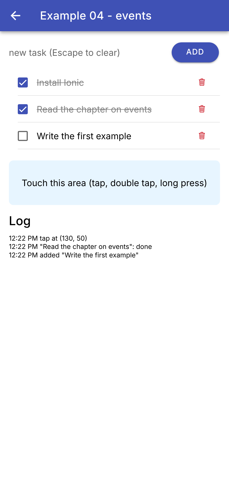
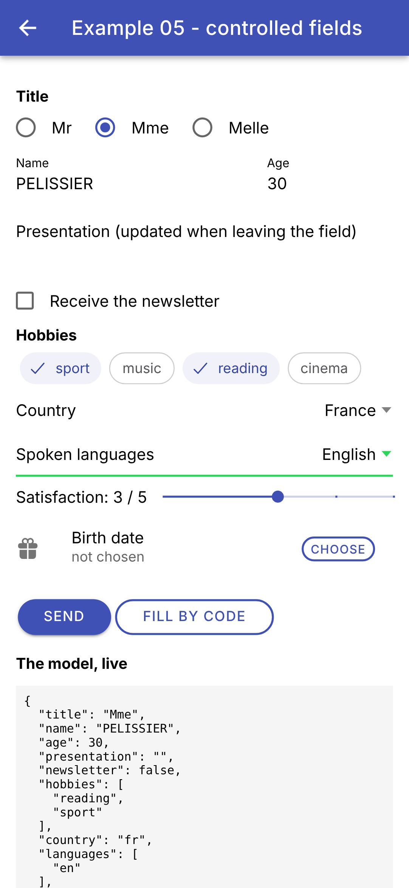
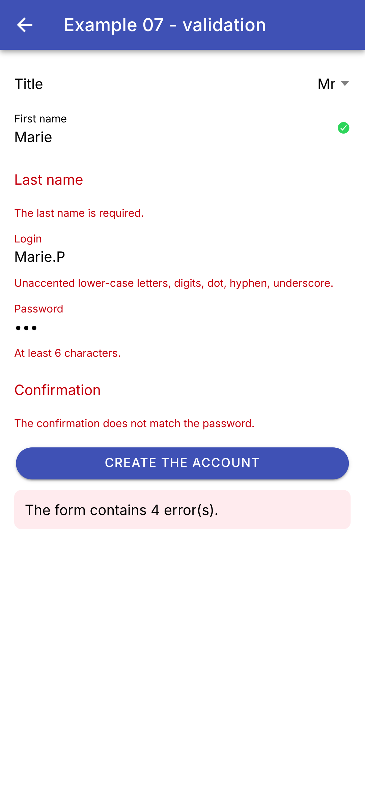
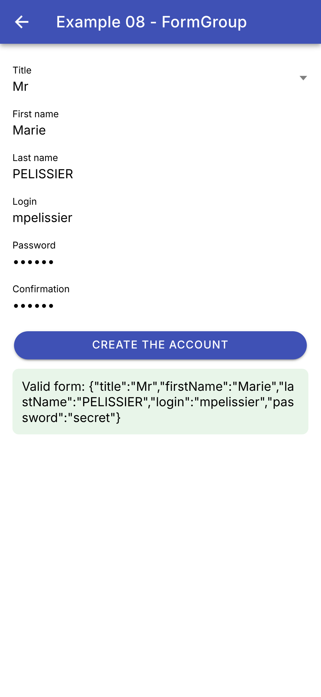

3. Primeros pasos con Ionic
3.1. Ejemplo 01: la estructura de una aplicación Ionic
3.1.1. El proyecto
Una aplicación [Ionic] creada con [Angular], es, en principio, una aplicación [Angular] estándar: se crea con la herramienta de línea de comandos de [Angular], [ng], y luego se le agregan los componentes de [Ionic] y de [Capacitor] ; esta herramienta la convertirá en una aplicación [Android]:
| npm install -g @angular/cli
ng new examples_ionic --style=scss --skip-tests --ssr=false
cd examples_ionic
npm install @ionic/angular ionicons @capacitor/core @capacitor/android @capacitor/preferences
npm install -D @capacitor/cli
npx cap init "Ionic Examples" fr.stahe.examples --web-dir dist/examples_ionic/browser
|
- Línea 1: instala [Angular CLI], el comando [ng], para toda la computadora ([-g], “global”);
- línea 2: crea el proyecto [examples_ionic]: una aplicación [Angular] completa, lista para ejecutarse. [--style=scss]: las hojas de estilo se escribirán en [SCSS], el CSS mejorado con variables y anidamiento; [--skip-tests]: sin archivos de pruebas unitarias; [--ssr=false]: sin renderizado en el servidor, innecesario para una aplicación móvil;
- Línea 4: los paquetes de [Ionic] (sus componentes para [Angular] y su fuente de íconos [ionicons]) y los de [Capacitor] (su núcleo, la plataforma [Android] y el almacenamiento de clave-valor en el dispositivo, que se usará a partir del ejemplo 20);
- línea 5: la herramienta de línea de comandos de [Capacitor], el comando [cap], que se usa solo para el desarrollo ([-D]);
- línea 6: escribe el archivo [capacitor.config.ts]: el nombre de la aplicación y su identificador (el prefijo [fr.stahe], invertido como un nombre de dominio, seguido del nombre de la aplicación; dos aplicaciones instaladas en el mismo teléfono deben tener identificadores diferentes), y la carpeta donde [ng build] almacena la aplicación compilada.
El proyecto de ejemplo se creó de esta manera y luego se completó manualmente su carpeta [src/app] para combinar veinticinco ejemplos en una sola aplicación: una página de inicio (el menú de ejemplos) y una página por ejemplo. De este modo, comparten los mismos paquetes, que se descargan una sola vez. Su estructura de directorios:
| examples_ionic
├── angular.json the Angular project configuration
├── capacitor.config.ts the Capacitor configuration
├── package.json the packages and the scripts of the project
├── package-lock.json the exact versions of the installed packages
├── proxy.conf.json the relay to the JSON server (examples 22 to 25)
├── tsconfig.json the TypeScript configuration
├── tsconfig.app.json
├── captures/ the scripts that make the screenshots of the course
├── node_modules/ the installed packages (npm install)
├── public/ files delivered as is (icon, images, dictionaries)
├── android/ the Android Studio project (after npx cap add android)
└── src/
├── index.html the page that hosts the application
├── main.ts the entry point
├── styles.scss the styles of the whole application
└── app/
├── app.ts the root component
├── back-button.ts Android's Back button
├── app.routes.ts the routes: one address per example
├── examples.ts the list of the 25 examples
├── home/ the menu of the examples
│ ├── home.page.ts
│ └── home.page.html
├── common/ the code shared by examples 22 to 25
├── ex01-first-application/
│ ├── ex01.page.ts
│ └── ex01.page.html
├── ex02-state/
│ ├── ex02.page.ts
│ └── ex02.page.html
└── ...
|
Cada ejemplo tiene su propia carpeta, [src/app/exNN-short-name]. Una página consta de dos archivos: una clase [TypeScript] ([exNN.page.ts]) y su plantilla [HTML] ([exNN.page.html]).
3.1.2. El archivo package.json
El archivo [package.json] describe el proyecto para [npm], el administrador de paquetes de [Node.js]: su nombre, sus scripts y los paquetes que requiere.
| {
"name": "examples-ionic",
"version": "0.0.0",
"scripts": {
"ng": "ng",
"start": "ng serve",
"build": "ng build",
"watch": "ng build --watch --configuration development",
"android": "ng build && cap sync android && cap run android",
"captures": "node captures/captures.mjs"
},
"private": true,
"packageManager": "npm@10.9.4",
"dependencies": {
"@angular/common": "^22.2.0",
"@angular/compiler": "^22.2.0",
"@angular/core": "^22.2.0",
"@angular/forms": "^22.2.0",
"@angular/platform-browser": "^22.2.0",
"@angular/router": "^22.2.0",
"@capacitor/android": "^8.5.2",
"@capacitor/app": "^8.1.2",
"@capacitor/core": "^8.5.2",
"@capacitor/preferences": "^8.0.1",
"@ionic/angular": "^9.0.6",
"ionicons": "^8.1.0",
"rxjs": "~7.8.0",
"tslib": "^2.3.0"
},
"devDependencies": {
"@angular/build": "^22.2.1",
"@angular/cli": "^22.2.1",
"@angular/compiler-cli": "^22.2.0",
"@capacitor/cli": "^8.5.2",
"playwright": "^1.56.1",
"prettier": "^3.8.1",
"typescript": "~6.0.2"
}
}
|
- líneas 2–3: el nombre y la versión del proyecto;
- líneas 4–11: los scripts, que se inician con [npm run name] (o [npm start] para el script [start]): [npm start] inicia [ng serve], el servidor de desarrollo; [npm run build] inicia [ng build], que construye la aplicación que se va a desplegar; [npm run android] realiza la compilación, copia la aplicación en el proyecto [Android] y la inicia en el teléfono (vea “Ejecución”); [npm run captures] genera las capturas de pantalla de este curso;
- línea 12: [private]: este proyecto no es una biblioteca; nunca se publicará en el repositorio de [npm];
- Líneas 14–29: los paquetes que requiere la aplicación, que se incluirán con ella. Los paquetes [@angular/...] son componentes del framework [Angular]: [core] (componentes, signals, inyección de dependencias), [common] (pipes, el cliente HTTP), [forms] (formularios), [router] (el enrutador), [platform-browser] (renderizado en el navegador), [compiler] (el compilador de plantillas). Luego vienen [Capacitor] y sus complementos [app] (el botón Atrás de [Android], vea más abajo) y [preferences] (la memoria del dispositivo, vea el ejemplo 20), [@ionic/angular] (los componentes de [Ionic]), [ionicons] (sus íconos), [rxjs] (flujos de datos asíncronos, vea el ejemplo 19) y [tslib] (pequeñas funciones utilizadas por el código compilado);
- líneas 30–38: paquetes utilizados únicamente para el desarrollo: [@angular/build] (el compilador de la aplicación, basado en [esbuild] y [Vite]), [@angular/cli] (el comando [ng]), [@capacitor/cli] (el comando [cap]), [typescript], [prettier] (formateo automático del código) y [playwright] (control del navegador, para las capturas de pantalla).
El prefijo [^] de una versión ([^22.2.0]) acepta cualquier versión más reciente de la misma versión mayor (22.3.0, pero no 23.0.0); el prefijo [~] ([~6.0.2]) acepta solo versiones de parche (6.0.3, pero no 6.1.0). El comando [npm install] descarga los paquetes en la carpeta [node_modules] y escribe las versiones exactas seleccionadas en el archivo [package-lock.json]. Para agregar un paquete, escriba [npm install package-name]: el comando lo instala y agrega su línea a [package.json].
3.1.3. El archivo angular.json
El archivo [angular.json] le indica a [Angular CLI] cómo compilar y servir la aplicación. Las líneas 14–36 (no se muestran) configuran los archivos generados por el comando [ng generate] (estilos en [SCSS], sin pruebas). El resto:
| "root": "",
"sourceRoot": "src",
"prefix": "app",
"architect": {
"build": {
"builder": "@angular/build:application",
"options": {
"browser": "src/main.ts",
"tsConfig": "tsconfig.app.json",
"inlineStyleLanguage": "scss",
"assets": [
{
"glob": "**/*",
"input": "public"
}
],
"styles": [
"src/styles.scss"
]
},
"configurations": {
"production": {
"budgets": [
{
"type": "initial",
"maximumWarning": "2MB",
"maximumError": "5MB"
},
{
"type": "anyComponentStyle",
"maximumWarning": "8kB",
"maximumError": "16kB"
}
],
"outputHashing": "all"
},
"development": {
"optimization": false,
"extractLicenses": false,
"sourceMap": true
}
},
"defaultConfiguration": "production"
},
"serve": {
"builder": "@angular/build:dev-server",
"configurations": {
"production": {
"buildTarget": "examples_ionic:build:production"
},
"development": {
"buildTarget": "examples_ionic:build:development"
}
},
"defaultConfiguration": "development",
"options": {
"proxyConfig": "proxy.conf.json",
"port": 8100
}
}
|
- líneas 38–40: el proyecto se encuentra en la raíz de la carpeta; su código fuente está en [src/]. [prefix]: el prefijo de las etiquetas de los componentes ([app-root], [app-ex01]...);
- líneas 42–43: la compilación ([ng build]), a cargo del constructor [@angular/build:application];
- línea 45: el punto de entrada de la aplicación, [src/main.ts];
- línea 47: los estilos escritos dentro de los propios componentes están en [SCSS];
- Líneas 48–53: el contenido de la carpeta [public/] se copia tal cual en la aplicación compilada: el ícono [favicon.ico], la imagen [ex03/doctor.svg] del ejemplo 03 y los diccionarios [i18n/] de los ejemplos 21 y 25;
- líneas 54–56: la hoja de estilos global, [src/styles.scss];
- líneas 59–73: la configuración [production], que es la de la aplicación distribuida: el código se optimiza (es el valor predeterminado), los “budgets” advierten si la aplicación crece demasiado, y los nombres de los archivos compilados contienen un hash de su contenido ([outputHashing]), para que el navegador no guarde en caché una versión antigua;
- Líneas 74–78: la configuración [development]: sin optimización y con “source maps”, que permiten a las herramientas de desarrollo del navegador mostrar el código original en [TypeScript];
- línea 80: [ng build] usa la configuración [production]; [ng build --configuration development] usa la otra;
- Líneas 82–97: el servidor de desarrollo ([ng serve]), configurado como [development] (línea 92), en el puerto 8100 (línea 95), con un reenvío al servidor JSON (línea 94).
3.1.4. El archivo proxy.conf.json
| {
"/api": {
"target": "http://localhost:8080",
"secure": false,
"changeOrigin": false,
"logLevel": "warn"
}
}
|
Este archivo solo se usará en los ejemplos 22 a 25. El servidor de desarrollo de [Angular] reenvía al servidor JSON de [RdvMedecins] ([http://localhost:8080]) cualquier solicitud cuya dirección comience con [/api]. Para el navegador, la aplicación y la API tienen entonces el mismo origen ([http://localhost:8100]): no hay verificación de CORS y la cookie de sesión se acepta sin ninguna configuración especial. Estos ejemplos volverán sobre este punto.
3.1.5. El archivo capacitor.config.ts
| // =========================================================================
// capacitor.config.ts - la configuración de Capacitor
// -------------------------------------------------------------------------
// Capacitor convierte la aplicación web (la carpeta producida por ng build)
// en una aplicación Android: la envuelve en un proyecto de Android Studio
// (carpeta android/), donde se muestra en un "WebView", el motor del
// navegador Chrome del teléfono. Comandos (vea el ejemplo 01, "Running"):
// npx cap add android (solo una vez: crea la carpeta android/)
// ng build (compila la aplicación web)
// npx cap sync android (la copia en el proyecto Android)
// npx cap run android (la ejecuta en un emulador o un teléfono)
// =========================================================================
import type { CapacitorConfig } from '@capacitor/cli';
const config: CapacitorConfig = {
// el identificador único de la aplicación en el teléfono (y en Play Store)
appId: 'fr.stahe.examples',
// el nombre que se muestra bajo el ícono
appName: 'Ionic Examples',
// la carpeta de la aplicación web compilada (ng build)
webDir: 'dist/examples_ionic/browser',
server: {
// permite solicitudes HTTP sin cifrar (http://10.0.2.2:8080) hacia
// el servidor JSON de desarrollo (ejemplos 22 a 25)
cleartext: true,
},
plugins: {
// CapacitorHttp: las solicitudes HTTP de la aplicación ya no las realiza
// el WebView sino el código nativo de Android. Consecuencias (vea los
// ejemplos 22 y 23): no hay verificación de CORS (el servidor JSON no tiene nada
// que permitir), y las cookies (la del token de autenticación) las
// almacena Android y se reenvían automáticamente
CapacitorHttp: {
enabled: true,
},
},
};
export default config;
|
- línea 18: el ID de la aplicación en el teléfono, [fr.stahe.examples];
- línea 20: su nombre, que se muestra debajo de su ícono;
- línea 22: la carpeta de la aplicación web compilada, que [Capacitor] copia en el proyecto [Android];
- líneas 23–27: de forma predeterminada, [Android] rechaza las solicitudes HTTP sin cifrar; estas se permiten para poder conectarse al servidor JSON de desarrollo (ejemplos 22–25);
- líneas 28–37: las solicitudes HTTP las realizará el código nativo de [Android] en lugar del navegador integrado. Los ejemplos 22 y 23 explican de nuevo el porqué.
Esta es la principal diferencia arquitectónica con [Flutter]: una aplicación [Ionic] es una aplicación **web** (HTML, CSS, JavaScript), que [Capacitor] envuelve en una aplicación [Android]. Esta aplicación solo muestra un “WebView”, el motor del navegador [Chrome] del teléfono, en modo de pantalla completa, que carga la aplicación web incluida en ella. [Capacitor] también da al código JavaScript acceso a las funciones del teléfono (almacenamiento, cámara, notificaciones, etc.) mediante complementos. [Flutter], en cambio, dibuja cada píxel de la pantalla con su propio motor.
3.1.6. El archivo tsconfig.json
| /* Para obtener más información sobre el archivo de configuración de Typescript: https://www.typescriptlang.org/docs/handbook/tsconfig-json.html. */
/* Para obtener más información sobre las opciones del compilador de Angular: https://angular.dev/reference/configs/angular-compiler-options. */
{
"compileOnSave": false,
"compilerOptions": {
"strict": true,
"noImplicitOverride": true,
"noPropertyAccessFromIndexSignature": true,
"noImplicitReturns": true,
"noFallthroughCasesInSwitch": true,
"skipLibCheck": true,
"isolatedModules": true,
"experimentalDecorators": true,
"importHelpers": true,
"target": "ES2022",
"module": "preserve"
},
"angularCompilerOptions": {
"enableI18nLegacyMessageIdFormat": false,
"strictInjectionParameters": true,
"strictInputAccessModifiers": true,
"strictTemplates": true
},
"files": [],
"references": [
{
"path": "./tsconfig.app.json"
}
]
}
|
La configuración del compilador de [TypeScript]. Observe lo siguiente:
- línea 6: [strict]: el tipado más estricto. Una variable de tipo [string] no puede contener [null]; un parámetro debe tener un tipo, etc.;
- línea 8: se accede a una propiedad de un objeto “diccionario” (de tipo [{ [key: string]: value }]) mediante corchetes: [errors['required']], not [errors.required] (vea el ejemplo 08);
- Líneas 9–10: una función debe devolver un valor en todos los casos; un [case] de un [switch] no debe “caer” en el siguiente;
- línea 22: [strictTemplates]: las plantillas [HTML] se verifican con el mismo rigor que el código [TypeScript]: una propiedad mal escrita o un argumento de tipo incorrecto son errores de compilación (vea el ejemplo 06).
3.1.7. La página src/index.html
| <!doctype html>
<html lang="en">
<head>
<meta charset="utf-8">
<title>Ionic Examples</title>
<base href="/">
<!-- viewport-fit=cover: la aplicación ocupa toda la pantalla del teléfono, notch incluido;
user-scalable=no: sin zoom con dos dedos, como en una aplicación nativa -->
<meta name="viewport" content="viewport-fit=cover, width=device-width, initial-scale=1.0, minimum-scale=1.0, maximum-scale=1.0, user-scalable=no">
<meta name="color-scheme" content="light dark">
<link rel="icon" type="image/x-icon" href="favicon.ico">
</head>
<body>
<app-root></app-root>
</body>
</html>
|
La aplicación web consta de esta única página, que el navegador (o el WebView del teléfono) carga al iniciar:
- línea 2: el idioma de la página, inglés;
- línea 6: la URL base de la aplicación; las URL de las páginas ([/ex01], [/ex02]...) serán relativas a la raíz;
- línea 9: la página ocupa todo el ancho de la pantalla, sin zoom: este es el comportamiento de una aplicación, no de un sitio web;
- línea 14: la etiqueta [app-root], vacía: [Angular] insertará allí el componente raíz de la aplicación.
3.1.8. El punto de entrada: src/main.ts
| // =========================================================================
// src/main.ts - el punto de entrada de la aplicación
// -------------------------------------------------------------------------
// Una aplicación Angular se inicia con bootstrapApplication: Angular crea
// el componente RAÍZ (App) y lo inserta en la etiqueta <app-root> de la
// página index.html. El segundo parámetro entrega los "providers"
// de toda la aplicación: Ionic, el enrutador, el cliente HTTP, el idioma.
// =========================================================================
import { registerLocaleData } from '@angular/common';
import { provideHttpClient } from '@angular/common/http';
import localeFr from '@angular/common/locales/fr';
import { LOCALE_ID } from '@angular/core';
import { bootstrapApplication } from '@angular/platform-browser';
import { provideRouter, withComponentInputBinding } from '@angular/router';
import { provideIonicAngular } from '@ionic/angular';
import { App } from './app/app';
import { routes } from './app/app.routes';
// las reglas de formato francesas (fechas, números, montos) de los
// "pipes" de Angular, para el segundo idioma de los ejemplos 09 y 21 (en-US ya viene incluido)
registerLocaleData(localeFr);
bootstrapApplication(App, {
providers: [
// Ionic: modo 'md' (Material Design) = la apariencia de Android, incluso en
// el navegador de una computadora (de lo contrario Ionic adopta la apariencia de iOS en un iPhone)
provideIonicAngular({ mode: 'md' }),
// el enrutador: la lista de rutas (app.routes.ts);
// withComponentInputBinding: los parámetros de una ruta se entregan a los
// inputs (input) del componente de la página (vea el ejemplo 17)
provideRouter(routes, withComponentInputBinding()),
// el cliente HTTP de Angular (ejemplos 22 a 25)
provideHttpClient(),
// el idioma de la aplicación: inglés (estadounidense)
{ provide: LOCALE_ID, useValue: 'en-US' },
],
}).catch((err) => console.error(err));
|
- línea 22: las reglas de formateo francesas para fechas y números, para los “pipes” de [Angular], que se usan como segundo idioma en los ejemplos 09 y 21 ([en-US] viene integrado);
- línea 24: [bootstrapApplication] inicia [Angular]: crea el componente raíz, [App], y lo inserta en la etiqueta [app-root] de [index.html]. El segundo parámetro especifica los “proveedores” ([providers]) de toda la aplicación: los servicios que la inyección de dependencias (ejemplo 14) proporcionará a los componentes que los soliciten;
- línea 28: [Ionic], en modo [md] ([Material Design], el aspecto de [Android]). Sin esta configuración, [Ionic] adoptaría el aspecto de [iOS] en un iPhone, y el de [Material Design] en cualquier otro dispositivo;
- línea 32: el enrutador de [Angular] y sus rutas (el archivo [app.routes.ts]). El enrutador asocia una página a cada dirección;
- línea 34: el cliente HTTP de [Angular] (ejemplos 22 a 25);
- línea 36: el idioma de la aplicación, [en-US] (inglés estadounidense), para el formateo de fechas y números.
Una nota sobre lo que **no** está en este archivo: [zone.js]. Hasta la versión 20, una aplicación [Angular] cargaba esta biblioteca, que supervisaba todo el código asíncrono (eventos, temporizadores, solicitudes) para determinar cuándo actualizar la pantalla. A partir de la versión 21, una nueva aplicación “zoneless” prescinde de ella: [Angular] actualiza la pantalla cuando cambia un **signal** leído por una plantilla, y después de cada evento gestionado por una plantilla (un toque, una pulsación de tecla). Así funcionan todos los ejemplos de este curso, y por eso sus datos cambiantes son signals.
3.1.9. Estilos: src/styles.scss
| // =========================================================================
// src/styles.scss - los estilos de toda la aplicación
// -------------------------------------------------------------------------
// Las hojas de estilo de Ionic: sin ellas, sus componentes no tienen
// su apariencia. core.css es esencial; las demás son utilidades
// (márgenes, alineaciones, clases ion-padding, ion-text-center...).
// =========================================================================
@use '@ionic/angular/css/core.css';
@use '@ionic/angular/css/normalize.css';
@use '@ionic/angular/css/structure.css';
@use '@ionic/angular/css/typography.css';
@use '@ionic/angular/css/padding.css';
@use '@ionic/angular/css/float-elements.css';
@use '@ionic/angular/css/text-alignment.css';
@use '@ionic/angular/css/text-transformation.css';
@use '@ionic/angular/css/flex-utils.css';
@use '@ionic/angular/css/display.css';
// El tema oscuro de Ionic, activado por la clase CSS ion-palette-dark
// aplicada en la etiqueta <html> (vea el ejemplo 20)
@use '@ionic/angular/css/palettes/dark.class.css';
// el color principal de la aplicación (botones, barra superior): un índigo,
// como en los ejemplos de Flutter. Ionic deriva de --ion-color-primary las
// variantes más clara (tint) y más oscura (shade)
:root {
--ion-color-primary: #3f51b5;
--ion-color-primary-rgb: 63, 81, 181;
--ion-color-primary-contrast: #ffffff;
--ion-color-primary-contrast-rgb: 255, 255, 255;
--ion-color-primary-shade: #37479f;
--ion-color-primary-tint: #5262bc;
}
|
- líneas 9–18: las hojas de estilo de [Ionic]: [core.css] es esencial; las demás proporcionan clases de utilidad ([ion-padding], [ion-text-center], [ion-margin-top]...);
- línea 22: el tema oscuro, habilitado mediante la clase CSS (ejemplo 20);
- líneas 27–34: el color principal de la aplicación ([primary]), un índigo, como en los ejemplos de [Flutter]. Los componentes de [Ionic] tienen una propiedad [color] ([color="primary"], [color="danger"], [color="success"]...) que toma sus valores de esta paleta.
3.1.10. El componente raíz: src/app/app.ts
| // =========================================================================
// src/app/app.ts - el componente RAÍZ de la aplicación
// -------------------------------------------------------------------------
// Solo contiene dos componentes de Ionic:
// - <ion-app>: el contenedor de toda aplicación Ionic;
// - <ion-router-outlet>: el lugar donde el enrutador muestra la página de
// la dirección actual. El de Ionic (y no el <router-outlet> de Angular)
// anima la transición de una página a otra y conserva las páginas anteriores
// en memoria: el botón Atrás del teléfono vuelve a ellas sin recrearlas.
// Su constructor conecta el botón Atrás de Android (vea back-button.ts).
// =========================================================================
import { Component } from '@angular/core';
import { IonApp, IonRouterOutlet } from '@ionic/angular';
import { handleBackButton } from './back-button';
@Component({
selector: 'app-root',
imports: [IonApp, IonRouterOutlet],
template: `
<ion-app>
<ion-router-outlet />
</ion-app>
`,
})
export class App {
constructor() {
handleBackButton();
}
}
|
- línea 14: los componentes de [Ionic] se importan del paquete [@ionic/angular]. Cada uno es una clase [TypeScript]: [IonApp] para la etiqueta [<ion-app>], [IonRouterOutlet] para [<ion-router-outlet>], y así sucesivamente;
- Líneas 17–25: un componente de [Angular] es una clase decorada con [@Component]. El decorador proporciona el nombre de su etiqueta ([selector]), los componentes que utiliza su plantilla ([imports]: un componente solo conoce lo que importa) y su plantilla, que se escribe directamente en el decorador ([template]);
- línea 21: [<ion-app>], el contenedor de toda la aplicación [Ionic];
- línea 22: [<ion-router-outlet>], el lugar donde el enrutador muestra la página correspondiente a la dirección actual. Es el de [Ionic], no el [<router-outlet>] de [Angular]: gestiona la navegación entre páginas, igual que lo hace [Android], y mantiene en memoria las páginas anteriores;
- líneas 26–30: la clase en sí no tiene datos ni comportamiento propios. Su constructor, que se ejecuta una sola vez al iniciar, conecta el botón Atrás de [Android] (línea 28).
Un teléfono [Android] tiene un botón (o gesto) Atrás. En una aplicación [Flutter], funciona por sí solo: cierra la ventana abierta, vuelve a la pantalla anterior y sale de la aplicación desde la primera pantalla. En una aplicación [Ionic], [Capacitor] recibe el evento Atrás; si no encuentra a nadie que lo gestione, simplemente retrocede en el historial de WebView y cierra la aplicación cuando ese historial está vacío. [Ionic] no recibe ninguna notificación: una ventana abierta (ejemplo 16) no se cierra y se puede salir de la aplicación desde una página distinta del menú. Por lo tanto, hay que conectarlo mediante el complemento [@capacitor/app]:
| // =========================================================================
// src/app/back-button.ts - el botón Atrás de Android
// -------------------------------------------------------------------------
// En el teléfono, Capacitor recibe la pulsación del botón Atrás. Si no tiene
// ningún listener para este evento, simplemente retrocede en
// el historial del WebView y luego cierra la aplicación: Ionic no sabe nada
// al respecto (un diálogo abierto no se cierra, ni tampoco el menú lateral).
// El plugin @capacitor/app permite suscribirse a él: en cuanto hay un
// listener, Capacitor transmite la pulsación a Ionic, que llama al manejador
// con la prioridad más alta:
// - 100: se cierra un diálogo abierto (alert, ion-modal...);
// - 99: se cierra el menú lateral abierto;
// - 1: (el nuestro) volvemos a la pantalla anterior; si no hay ninguna,
// salimos de la aplicación.
// En el navegador no hay botón Atrás: no hacemos nada.
// =========================================================================
import { inject } from '@angular/core';
import { NavController, Platform } from '@ionic/angular';
import { App as CapacitorApp } from '@capacitor/app';
import { Capacitor } from '@capacitor/core';
// debe llamarse en el constructor del componente raíz (contexto de inyección)
export function handleBackButton(): void {
if (!Capacitor.isNativePlatform()) return;
const navigation = inject(NavController);
// un listener (vacío): Capacitor ahora transmite la pulsación a Ionic
void CapacitorApp.addListener('backButton', () => {});
inject(Platform).backButton.subscribeWithPriority(1, async () => {
// pop(): vuelve a la pantalla anterior de la pila de Ionic; false: la
// pila solo contiene la pantalla mostrada, no queda nada atrás
if (!(await navigation.pop())) {
await CapacitorApp.exitApp();
}
});
}
|
- línea 20: el complemento [App] de [Capacitor] (instalado con [npm install @capacitor/app]). Se llama [App], igual que el componente raíz: se le cambia el nombre al importarlo ([as CapacitorApp]) para evitar confusiones;
- línea 24: una función normal, llamada por el constructor del componente raíz. Utiliza [inject]: solo se puede llamar donde [Angular] puede proporcionar servicios (un constructor, la inicialización de propiedades), el “contexto de inyección”;
- línea 25: en un navegador ([ng serve]), no hay botón Atrás: no se hace nada. [Capacitor.isNativePlatform()] equivale a [true] en la aplicación [Android];
- línea 26: el servicio [NavController] de [Ionic]: conoce las pilas de páginas de [<ion-router-outlet>];
- línea 28: un listener del evento [backButton], que no hace nada. Su sola presencia basta: en cuanto hay un listener, [Capacitor] ya no retrocede automáticamente en el historial y le cede el control a [Ionic];
- Líneas 29–35: [Ionic] recibe el control y llama a UN ÚNICO manejador: el de mayor prioridad. A las ventanas ([AlertController], [ion-modal], la lista de [ion-select]...) se les asigna la prioridad 100, mientras que el menú desplegable tiene la prioridad 99: cuando una de ellas está abierta, esa es la que se cierra. En caso contrario, nuestro manejo tiene preferencia (prioridad 1): [navigation.pop()] vuelve a la página anterior y devuelve [false] si no hay ninguna; entonces se sale de la aplicación ([exitApp()]).
En este proyecto, el menú es la única página de inicio: el botón Atrás lleva de un ejemplo de vuelta al menú y luego sale de la aplicación.
3.1.12. Las rutas: src/app/app.routes.ts
| // =========================================================================
// src/app/app.routes.ts - las rutas de la aplicación de ejemplos
// -------------------------------------------------------------------------
// Una ruta asocia una DIRECCIÓN (path) con una PÁGINA (un componente). La página
// de inicio ('') es el menú de ejemplos; cada ejemplo tiene su dirección:
// /ex01, /ex02... El código de un ejemplo solo se carga cuando se navega a él
// (loadComponent, loadChildren: carga diferida, "lazy", vea el ejemplo 17).
// =========================================================================
import { Routes } from '@angular/router';
export const routes: Routes = [
{ path: '', loadComponent: () => import('./home/home.page').then((m) => m.HomePage) },
{ path: 'ex01', loadComponent: () => import('./ex01-first-application/ex01.page').then((m) => m.Ex01Page) },
{ path: 'ex02', loadComponent: () => import('./ex02-state/ex02.page').then((m) => m.Ex02Page) },
{ path: 'ex03', loadComponent: () => import('./ex03-templates/ex03.page').then((m) => m.Ex03Page) },
{ path: 'ex04', loadComponent: () => import('./ex04-events/ex04.page').then((m) => m.Ex04Page) },
{ path: 'ex05', loadComponent: () => import('./ex05-controlled-fields/ex05.page').then((m) => m.Ex05Page) },
{ path: 'ex06', loadComponent: () => import('./ex06-reducer/ex06.page').then((m) => m.Ex06Page) },
{ path: 'ex07', loadComponent: () => import('./ex07-validation/ex07.page').then((m) => m.Ex07Page) },
{ path: 'ex08', loadComponent: () => import('./ex08-reactive-forms/ex08.page').then((m) => m.Ex08Page) },
{ path: 'ex09', loadComponent: () => import('./ex09-formatting/ex09.page').then((m) => m.Ex09Page) },
{ path: 'ex10', loadComponent: () => import('./ex10-component-inputs/ex10.page').then((m) => m.Ex10Page) },
{ path: 'ex11', loadComponent: () => import('./ex11-lifting-state-up/ex11.page').then((m) => m.Ex11Page) },
{ path: 'ex12', loadComponent: () => import('./ex12-composition/ex12.page').then((m) => m.Ex12Page) },
{ path: 'ex13', loadComponent: () => import('./ex13-lifecycle/ex13.page').then((m) => m.Ex13Page) },
{ path: 'ex14', loadComponent: () => import('./ex14-injection/ex14.page').then((m) => m.Ex14Page) },
{ path: 'ex15', loadComponent: () => import('./ex15-behaviours/ex15.page').then((m) => m.Ex15Page) },
{ path: 'ex16', loadComponent: () => import('./ex16-confirmation/ex16.page').then((m) => m.Ex16Page) },
// los ejemplos 17 y 18 tienen sus propias rutas, "hijas" de /ex17 y /ex18
{ path: 'ex17', loadChildren: () => import('./ex17-router/routes').then((m) => m.routes) },
{ path: 'ex18', loadChildren: () => import('./ex18-guards/routes').then((m) => m.routes) },
{ path: 'ex19', loadComponent: () => import('./ex19-asynchronous/ex19.page').then((m) => m.Ex19Page) },
{ path: 'ex20', loadComponent: () => import('./ex20-shared-state/ex20.page').then((m) => m.Ex20Page) },
{ path: 'ex21', loadComponent: () => import('./ex21-i18n/ex21.page').then((m) => m.Ex21Page) },
{ path: 'ex22', loadComponent: () => import('./ex22-http/ex22.page').then((m) => m.Ex22Page) },
{ path: 'ex23', loadComponent: () => import('./ex23-login/ex23.page').then((m) => m.Ex23Page) },
{ path: 'ex24', loadComponent: () => import('./ex24-api-layer/ex24.page').then((m) => m.Ex24Page) },
{ path: 'ex25', loadComponent: () => import('./ex25-server-errors/ex25.page').then((m) => m.Ex25Page) },
// cualquier otra dirección lleva de vuelta al menú
{ path: '**', redirectTo: '' },
];
|
- Línea 12: las rutas: un arreglo de objetos [Route];
- Línea 13: la URL vacía ([http://localhost:8100/]) muestra la página de inicio, [HomePage]. [loadComponent] contiene una función que importa el archivo del componente: este archivo solo se carga cuando se navega a esa dirección (carga diferida; vea el ejemplo 17). Por lo tanto, al iniciar, la aplicación carga únicamente el menú;
- líneas 14–29: una ruta, por ejemplo: [/ex01], [/ex02]...;
- líneas 31–32: los ejemplos 17 y 18 tienen sus propias rutas (ejemplo 17);
- línea 41: cualquier otra dirección vuelve al menú.
3.1.13. Lista de ejemplos: src/app/examples.ts
| // =========================================================================
// src/app/examples.ts - la lista de los 25 ejemplos
// -------------------------------------------------------------------------
// Una única fuente para la página de inicio (el menú de ejemplos). Cada
// ejemplo tiene un número, un título y un capítulo; su dirección (/ex01, /ex02...)
// se declara en app.routes.ts.
// =========================================================================
export interface Example {
number: string; // '01'...'25'
title: string;
chapter: string;
}
export const EXAMPLES: Example[] = [
{ number: '01', title: 'a first application', chapter: 'First steps' },
{ number: '02', title: 'state and computed values', chapter: 'First steps' },
{ number: '03', title: 'writing a template', chapter: 'First steps' },
{ number: '04', title: 'events', chapter: 'First steps' },
{ number: '05', title: 'all the field types', chapter: 'First steps' },
{ number: '06', title: 'a form, an object, a reducer', chapter: 'First steps' },
{ number: '07', title: 'validating a form, by hand', chapter: 'First steps' },
{ number: '08', title: 'reactive forms', chapter: 'First steps' },
{ number: '09', title: 'formatting values', chapter: 'First steps' },
{ number: '10', title: 'components and their inputs', chapter: 'Components' },
{ number: '11', title: 'the child notifies its parent', chapter: 'Components' },
{ number: '12', title: 'composition', chapter: 'Components' },
{ number: '13', title: 'the lifecycle of a component', chapter: 'Components' },
{ number: '14', title: 'dependency injection', chapter: 'Components' },
{ number: '15', title: 'reusing behaviours', chapter: 'Components' },
{ number: '16', title: 'a reusable confirmation dialog', chapter: 'Components' },
{ number: '17', title: 'the router', chapter: 'Routing' },
{ number: '18', title: 'navigation guards', chapter: 'Routing' },
{ number: '19', title: 'promises, observables and timers', chapter: 'Asynchrony and shared state' },
{ number: '20', title: 'a shared state', chapter: 'Asynchrony and shared state' },
{ number: '21', title: 'an application in two languages', chapter: 'Internationalization' },
{ number: '22', title: 'a first HTTP request', chapter: 'Talking to the server' },
{ number: '23', title: 'login, cookie and session', chapter: 'Talking to the server' },
{ number: '24', title: 'an API access layer', chapter: 'Talking to the server' },
{ number: '25', title: 'the errors returned by the server', chapter: 'Talking to the server' },
];
|
- líneas 9–13: una interfaz de [TypeScript] describe la estructura de un objeto: en este caso, un número, un título y un capítulo, tres cadenas;
- líneas 15–41: los 25 ejemplos, un arreglo de objetos [Example]. La palabra clave [export] hace que la constante sea visible para otros archivos, que la importan mediante [import { EXAMPLES } from '../examples'].
3.1.14. La página de inicio
La página de inicio muestra esta tabla, agrupada por capítulo:
| // =========================================================================
// src/app/home/home.page.ts - el menú de los 25 ejemplos
// -------------------------------------------------------------------------
// La primera página de la aplicación: la lista de ejemplos, agrupados por
// capítulo. Un toque en un ejemplo abre su página (/ex01, /ex02...).
// =========================================================================
import { Component } from '@angular/core';
import { RouterLink } from '@angular/router';
import {
IonContent, IonHeader, IonItem, IonItemDivider, IonItemGroup, IonLabel, IonList, IonTitle, IonToolbar,
} from '@ionic/angular';
import { EXAMPLES, Example } from '../examples';
@Component({
selector: 'app-home',
imports: [RouterLink, IonHeader, IonToolbar, IonTitle, IonContent, IonList, IonItemGroup, IonItemDivider, IonItem, IonLabel],
templateUrl: './home.page.html',
})
export class HomePage {
// los ejemplos, agrupados por capítulo: [{ chapter, examples: [...] }, ...]
readonly chapters: { chapter: string; examples: Example[] }[] = [];
constructor() {
for (const example of EXAMPLES) {
let group = this.chapters.find((c) => c.chapter === example.chapter);
if (!group) {
group = { chapter: example.chapter, examples: [] };
this.chapters.push(group);
}
group.examples.push(example);
}
}
}
|
- líneas 15–19: el componente, su etiqueta, sus subcomponentes y su plantilla, que ahora se almacena en un archivo aparte ([templateUrl]);
- línea 22: un campo de la clase, que lee la plantilla: la lista de capítulos, cada uno con sus ejemplos;
- líneas 24–33: el constructor coloca cada ejemplo en el grupo de su capítulo, creando el grupo cuando es necesario.
| <!-- el menú de ejemplos -->
<ion-header>
<ion-toolbar color="primary">
<ion-title>Ionic Examples</ion-title>
</ion-toolbar>
</ion-header>
<ion-content>
<ion-list>
@for (group of chapters; track group.chapter) {
<ion-item-group>
<ion-item-divider color="light">
<ion-label>{{ group.chapter }}</ion-label>
</ion-item-divider>
@for (example of group.examples; track example.number) {
<!-- routerLink: un toque en el elemento abre la página del ejemplo;
detail: la pequeña flecha a la derecha -->
<ion-item [routerLink]="'/ex' + example.number" detail>
<ion-label>Example {{ example.number }} - {{ example.title }}</ion-label>
</ion-item>
}
</ion-item-group>
}
</ion-list>
</ion-content>
|
- líneas 2–6: la barra superior: [<ion-header>] contiene una barra de herramientas, [<ion-toolbar>], con los colores de la aplicación ([color="primary"]), y su título, [<ion-title>];
- línea 8: [<ion-content>]: el cuerpo de la página, que se desplaza cuando excede la altura de la pantalla;
- línea 9: [<ion-list>]: una lista;
- línea 10: [@for] repite su bloque para cada elemento de un arreglo (vea el ejemplo 03): un grupo por capítulo;
- líneas 12–14: el título del grupo, una línea separadora ([<ion-item-divider>]);
- línea 18: una línea de la lista ([<ion-item>]), por ejemplo. [[routerLink]]: al tocar la línea se va a la URL del ejemplo; [detail]: la pequeña flecha de la derecha.

3.1.15. La página del ejemplo 01
Un ejemplo es una página, es decir, un componente, enrutada a su dirección. El del ejemplo 01:
| // =========================================================================
// src/app/ex01-first-application/ex01.page.ts - una primera aplicación
// -------------------------------------------------------------------------
// Una página de Ionic es un COMPONENTE de Angular: una clase TypeScript, decorada
// con @Component, asociada a una PLANTILLA HTML que describe lo que
// muestra. La plantilla mezcla etiquetas HTML ordinarias, componentes de
// Ionic (<ion-button>, <ion-card>...) y expresiones {{ ... }}
// que muestran los datos de la clase.
// Los datos que cambian son SIGNALS: cuando el valor de un signal
// cambia, Angular actualiza en pantalla lo que lo muestra.
// =========================================================================
import { Component, signal } from '@angular/core';
import {
IonBackButton, IonButton, IonButtons, IonContent, IonHeader, IonText, IonTitle, IonToolbar,
} from '@ionic/angular';
// datos "ordinarios", fuera del componente: nunca cambian
const title = 'Welcome to Ionic';
const languages = ['TypeScript', 'Angular', 'Ionic'];
// "12:05:09": la hora actual, con dos dígitos
function currentTime(): string {
const d = new Date();
const twoDigits = (n: number) => n.toString().padStart(2, '0');
return `${twoDigits(d.getHours())}:${twoDigits(d.getMinutes())}:${twoDigits(d.getSeconds())}`;
}
@Component({
// el nombre de la etiqueta del componente (<app-ex01>): el enrutador la inserta
// por sí mismo, nosotros nunca la escribimos
selector: 'app-ex01',
// los componentes de Ionic usados por la plantilla: un componente solo
// conoce lo que importa
imports: [IonHeader, IonToolbar, IonButtons, IonBackButton, IonTitle, IonContent, IonButton, IonText],
// la plantilla, en un archivo aparte
templateUrl: './ex01.page.html',
})
export class Ex01Page {
// datos leídos por la plantilla: campos simples de la clase
readonly title = title;
readonly languages = languages;
// el ESTADO: signals. signal(0) crea un signal con valor inicial 0;
// leemos su valor llamándolo como una función: counter()
readonly counter = signal(0);
readonly time = signal(currentTime());
// el método llamado por el botón
increment(): void {
// set: el nuevo valor; update: el nuevo valor, calculado a partir del
// anterior. Angular entonces actualiza la pantalla: nosotros nunca la
// modificamos
this.counter.update((n) => n + 1);
this.time.set(currentTime());
}
}
|
- Línea 13: [Component] (el decorador de componentes) y [signal] provienen del núcleo de [Angular];
- líneas 14–16: los componentes de [Ionic] que utiliza la plantilla;
- líneas 19–20: dos datos ordinarios, declarados fuera del componente: nunca cambian. [const]: una variable a la que se asigna un valor una sola vez;
- líneas 23–27: una función normal que devuelve la hora actual con el formato “12:05:09”. Contiene una pequeña función flecha, [twoDigits]. [
...${expression}...] es una plantilla de cadena: en ella se inserta el valor de cada expresión;
- líneas 29–38: el decorador [@Component]: la etiqueta del componente (línea 32, que inserta el propio enrutador: nunca la escribimos), los componentes de [Ionic] que utiliza su plantilla (línea 35) y el archivo que contiene su plantilla (línea 37);
- línea 39: la clase del componente. [export]: el archivo de rutas la importa;
- líneas 41–42: dos campos de la clase, que lee la plantilla. [readonly]: no se les volverá a asignar un valor;
- líneas 46–47: el **estado** del componente, los datos que cambian: dos **signals**. [signal(0)] crea un signal con un valor inicial de 0, cuyo tipo ([number]) se infiere de este valor. El valor de un signal se lee llamándolo como una función: [counter()];
- Líneas 50–56: el método al que llama el botón. No interactúa con la pantalla; cambia el estado. [update] calcula el nuevo valor a partir del anterior (línea 54), y [set] lo asigna directamente (línea 55). [Angular] sabe entonces que las partes de la pantalla que leen estos signals deben volver a dibujarse, y las vuelve a dibujar.
La plantilla:
| <!-- ======================================================================
ex01.page.html - la plantilla de la página del ejemplo 01
====================================================================== -->
<!-- ion-header: la barra superior, con un botón Atrás y un título -->
<ion-header>
<ion-toolbar color="primary">
<ion-buttons slot="start">
<!-- el botón Atrás: regresa al menú de los ejemplos (defaultHref)
si se llegó directamente a esta página -->
<ion-back-button defaultHref="/" />
</ion-buttons>
<ion-title>Example 01 - a first application</ion-title>
</ion-toolbar>
</ion-header>
<!-- ion-content: el cuerpo de la página, que se desplaza si es necesario;
ion-padding: un margen alrededor -->
<ion-content class="ion-padding">
<h2>{{ title }}</h2>
<p>This screen is built by Ionic and Angular, from the Ex01Page component and its template.</p>
<!-- {{ expresión }}: el valor de una expresión TypeScript, insertado en el texto -->
<p>It is written in {{ languages.join(', ') }} ({{ languages.length }} languages).</p>
<!-- (click): el método que se llama cuando se presiona el botón (vea el ejemplo 04) -->
<ion-button (click)="increment()">Click me</ion-button>
<p>
<!-- counter(): LEEMOS un signal llamándolo -->
<ion-text color="primary">
<strong>You clicked {{ counter() }} times (last click: {{ time() }}).</strong>
</ion-text>
</p>
</ion-content>
|
- líneas 6–15: la barra superior. [<ion-buttons slot="start">] coloca botones al comienzo de la barra (a la izquierda): un botón Atrás, [<ion-back-button>], que lo lleva a la página anterior. Si no hay ninguna (escribió la dirección directamente, [/ex01]), [defaultHref] especifica la página a la que se debe ir: el menú;
- línea 19: el cuerpo de la página, con un margen alrededor (clase [ion-padding]);
- línea 20: [{{ title }}]: una “interpolación”: el valor de una expresión insertado en el texto. La expresión se evalúa en el contexto de la clase: [title] es el campo de la línea 41 del componente;
- línea 23: una expresión puede llamar a métodos: [languages.join(', ')], [languages.length];
- Línea 26: [(click)="increment()"]: cuando se presiona el botón, [Angular] ejecuta la instrucción escrita entre comillas. La llamada se escribe con paréntesis: la instrucción se ejecuta solo cuando se presiona el botón (vea el ejemplo 04);
- líneas 30–32: texto que depende del estado. [counter()] lee el signal: cuando este cambia, cambia este texto. [<ion-text color="primary">] colorea su contenido.
El árbol de componentes de la pantalla, tal como lo muestra la extensión [Angular DevTools] de las herramientas de desarrollo de [Chrome] (pestaña [Angular]), complementado con los elementos HTML:
| App (app-root)
└── ion-app
└── ion-router-outlet
└── Ex01Page (app-ex01)
├── ion-header
│ └── ion-toolbar
│ ├── ion-buttons
│ │ └── ion-back-button
│ └── ion-title
└── ion-content
├── h2 (the title)
├── p
├── p
├── ion-button
└── p
└── ion-text
└── strong (the counter)
|
Al igual que con [Flutter], escribimos muy poco código de “implementación” y mucho código “descriptivo”. Pero mientras que [Flutter] describe la pantalla en [Dart] mediante constructores de widgets anidados, [Angular] separa ambas cosas: la clase [TypeScript] contiene los datos y los comportamientos, mientras que la plantilla [HTML] describe la pantalla. Los componentes de [Ionic] ([<ion-button>], [<ion-toolbar>]...) son verdaderos elementos HTML, “componentes web” (“Web Components”) creados por la biblioteca [@ionic/core]: funcionan en cualquier navegador, y [@ionic/angular] los envuelve para que [Angular] pueda tratarlos como sus propios componentes. Por eso el mismo [Ionic] también existe para [React] y [Vue.js].
3.1.16. Ejecución
En la consola abierta en la carpeta [examples_ionic] (los paquetes ya se instalaron una vez con [npm install]):
La consola muestra:
| > examples-ionic@0.0.0 start
> ng serve
Initial chunk files | Names | Raw size
styles.css | styles | 56.90 kB |
main.js | main | 6.35 kB |
| Initial total | 63.25 kB
Lazy chunk files | Names | Raw size
chunk-QC4MGRJ7.js | home-page | 7.15 kB |
chunk-IMCNE3A4.js | ex01-page | 6.23 kB |
...
Application bundle generation complete. [6.046 seconds]
Watch mode enabled. Watching for file changes...
➜ Local: http://localhost:8100/
|
La aplicación se compila en unos segundos: un archivo [main.js] que se carga al iniciar y un pequeño archivo por página (“lazy chunk”), que se carga bajo demanda. Abra la URL [http://localhost:8100] en [Chrome]. Para ver la aplicación con el tamaño de un teléfono, abra las herramientas de desarrollo (F12), luego la barra de emulación de dispositivos (Ctrl+Shift+M) y seleccione un teléfono de la lista (un [Pixel 7], por ejemplo), o especifique las dimensiones (las capturas de pantalla de este tutorial son de 412 x 892 píxeles). A la izquierda, la pantalla inicial del ejemplo 01; a la derecha, después de tocar el botón dos veces:
Dos experimentos para probar:
- Edite el texto de la línea 21 de [ex01.page.html] y guarde el archivo: la consola muestra [Component update sent to client(s)] y la pantalla cambia de inmediato, con el contador conservando su valor. Esto es una recarga en caliente: la nueva plantilla reemplaza a la anterior en la aplicación que se está ejecutando. En cambio, un cambio en el código [TypeScript] ([ex01.page.ts]) recarga toda la página ([Page reload sent to client(s)]): el contador vuelve a 0, como con el “hot restart” de [Flutter];
- Explore la aplicación con las herramientas de desarrollo: la pestaña [Elements] muestra las etiquetas [<ion-...>] de la página, la pestaña [Console] muestra los errores que haya y la pestaña [Sources] muestra el código [TypeScript] (gracias a los “source maps”), donde puede establecer puntos de interrupción.
Ahora pasemos a [Android]. Primero, debe crear el proyecto [Android]:
Este comando crea la carpeta [android/]: un proyecto completo de [Android Studio] que simplemente muestra el archivo de WebView y carga en él la aplicación web. Rara vez se le hacen cambios (el ícono, los permisos). Sin embargo, con las versiones recientes de [Android Studio] es necesario un ajuste: su JDK es un [Java] 25, que no es compatible con la versión de [Gradle] seleccionada por [Capacitor] 8 (la versión 8.14). La compilación falla entonces con el error [Unsupported class file major version 69]. Basta con cambiar a [Gradle] 9.1 modificando una línea del archivo [android/gradle/wrapper/gradle-wrapper.properties]:
| distributionUrl=https\://services.gradle.org/distributions/gradle-9.1.0-all.zip
|
(en lugar de [gradle-8.14.3-all.zip]). La primera compilación descarga esta versión de [Gradle] (aproximadamente 200 MB). Luego, cada vez que la aplicación cambie:
| npx ng build
npx cap sync android
npx cap run android
|
- Línea 1: compila la aplicación web en la carpeta [dist/examples_ionic/browser] (configuración [production]);
- línea 2: la copia en el proyecto [Android] (usando la configuración de [capacitor.config.ts] y los complementos de [Capacitor]);
- línea 3: construye la aplicación [Android] (con la herramienta [Gradle]), la instala en un emulador en ejecución o en un teléfono conectado y la inicia. El comando le pide que seleccione un dispositivo si hay varios disponibles.
En el teléfono, el botón Atrás lo lleva una pantalla hacia atrás, al menú, y sale de la aplicación desde el menú (vea [back-button.ts]).
También puede abrir el proyecto en [Android Studio] ([npx cap open android]) e iniciar la aplicación con su botón [Run]. La primera compilación tarda uno o dos minutos; las siguientes solo unos segundos. En el teléfono, la pantalla es la misma que en el navegador, renderizada por el mismo motor: el de [Chrome]. También se depura con las mismas herramientas: la dirección [chrome://inspect], en el [Chrome] de la computadora, enumera los WebView de las aplicaciones que se están ejecutando en el emulador y abre sus herramientas de desarrollo.
Este ciclo (compilar, copiar, construir) no admite la recarga en caliente de [ng serve]. Para habilitarla en el teléfono, puede indicarle a la aplicación que obtenga su código del servidor de desarrollo de la computadora en lugar de su copia integrada:
| npx ng serve --host 0.0.0.0
npx cap run android --live-reload --host=192.168.1.20 --port=8100
|
- línea 1: el servidor de desarrollo acepta conexiones de máquinas distintas de la propia computadora (de forma predeterminada, solo escucha en [localhost]);
- línea 2: [192.168.1.20] es la dirección de la computadora en la red local ([ipconfig] en [Windows] la proporciona). La aplicación instalada carga entonces [http://192.168.1.20:8100] y se recarga cada vez que se realiza un cambio.
Úselo con precaución: el teléfono debe estar conectado a la computadora (misma red Wi-Fi, firewall de la computadora abierto en el puerto 8100) y la aplicación instalada de esta manera ya no funcionará sin el servidor de desarrollo. Cuando termine el trabajo, ejecute de nuevo [npx ng build], seguido de [npx cap sync android], para que la aplicación vuelva a incluir su propio código. En este curso, desarrollaremos en el navegador y luego ejecutaremos en [Android] para verificar.
3.2. Ejemplo 02: Estado y valores calculados
El estado está en el corazón de [Angular], así como de [Flutter] y [React]. Este ejemplo calcula el precio con IVA de un artículo:
| // =========================================================================
// src/app/ex02-state/ex02.page.ts - estado y valores calculados
// -------------------------------------------------------------------------
// Una pequeña calculadora de precios (con IVA incluido):
// - el ESTADO: signals (signal()). Cambiar su valor (set, update)
// actualiza en pantalla lo que los muestra;
// - un valor CALCULADO a partir del estado NO es estado: es un
// signal calculado (computed()), que se recalcula cuando cambia uno de los signals que
// lee. Siempre está al día, sin nada que sincronizar;
// - un dato que depende de los valores SUCESIVOS del estado (el historial
// de los totales) se actualiza donde cambia el estado: en el método
// change(), por el que pasan todos los cambios;
// - el título de la aplicación (pestaña del navegador) no está en la
// plantilla: es un EFECTO (effect()), una función que Angular vuelve a ejecutar
// cada vez que cambia uno de los signals que lee.
// =========================================================================
import { Component, computed, DestroyRef, effect, inject, signal } from '@angular/core';
import { Title } from '@angular/platform-browser';
import {
IonBackButton, IonButton, IonButtons, IonCard, IonCardContent, IonCardHeader, IonCardSubtitle, IonCardTitle,
IonContent, IonHeader, IonIcon, IonInput, IonItem, IonLabel, IonList, IonNote, IonSegment, IonSegmentButton,
IonTitle, IonToolbar, SegmentValue,
} from '@ionic/angular';
import { addIcons } from 'ionicons';
import { add, remove } from 'ionicons/icons';
// un formateador de montos en euros, estilo inglés (€1,234.50), vea el ejemplo 09
const euros = new Intl.NumberFormat('en-US', { style: 'currency', currency: 'EUR' });
// los valores iniciales (botón Restablecer)
const LABEL = 'Pen';
const PRICE = '2.5';
@Component({
selector: 'app-ex02',
imports: [
IonHeader, IonToolbar, IonButtons, IonBackButton, IonTitle, IonContent, IonCard, IonCardHeader, IonCardTitle,
IonCardSubtitle, IonCardContent, IonInput, IonButton, IonIcon, IonSegment, IonSegmentButton, IonList, IonItem,
IonLabel, IonNote,
],
templateUrl: './ex02.page.html',
styles: `
.quantity { display: flex; align-items: center; margin: 12px 0 8px; }
.quantity span { flex: 1; }
.quantity strong { font-size: 1.1em; min-width: 1.5em; text-align: center; }
.bold { font-weight: bold; }
ion-note { font-size: 1rem; }
`,
})
export class Ex02Page {
// el estado: cuatro signals, tipados por su valor inicial
// (el precio se conserva como TEXTO: el que escribimos, con su separador)
readonly label = signal(LABEL);
readonly priceText = signal(PRICE);
readonly quantity = signal(1);
readonly vatRate = signal(20); // en %
// el historial de los últimos 5 cambios del total con IVA incluido
readonly history = signal<string[]>([]);
// valores CALCULADOS: computed() memoriza el resultado y solo
// lo recalcula si cambió alguno de los signals leídos
readonly priceExclVat = computed(() => Number(this.priceText().replace(',', '.')) || 0);
readonly totalExclVat = computed(() => this.quantity() * this.priceExclVat());
readonly vatAmount = computed(() => (this.totalExclVat() * this.vatRate()) / 100);
readonly totalInclVat = computed(() => this.totalExclVat() + this.vatAmount());
// las filas de la tarjeta de resultados: DATOS, que la plantilla recorre
readonly lines = computed(() => [
{ label: 'Total excl. VAT', amount: euros.format(this.totalExclVat()), bold: false },
{
label: `VAT (${this.vatRate()} %)`,
amount: euros.format(this.vatAmount()),
bold: false,
},
{ label: 'Total incl. VAT', amount: euros.format(this.totalInclVat()), bold: true },
]);
constructor() {
// los íconos usados por la plantilla (<ion-icon name="add" />)
addIcons({ add, remove });
// el servicio Title de Angular cambia el título de la página (la pestaña del
// navegador). effect() vuelve a ejecutar la función cada vez que cambia totalInclVat
const title = inject(Title);
effect(() => title.setTitle(`Incl. VAT: ${euros.format(this.totalInclVat())}`));
// al salir de la página (el componente se destruye), restauramos el título de la aplicación
inject(DestroyRef).onDestroy(() => title.setTitle('Ionic Examples'));
}
// TODOS los cambios del estado pasan por este método: anota el
// total con IVA incluido antes del cambio, aplica el cambio y completa
// el historial si el total cambió
change(apply: () => void): void {
const oldTotal = this.totalInclVat();
apply();
// leer un computed después de un cambio lo recalcula de inmediato
const newTotal = this.totalInclVat();
if (newTotal !== oldTotal) {
const line = `${euros.format(oldTotal)} -> ${euros.format(newTotal)}`;
// un array NUEVO (y no push): el signal ve que su valor cambió
this.history.update((h) => [line, ...h].slice(0, 5));
}
}
// cambiar el elemento restablece la cantidad a 1: lo hacemos donde sabemos
// POR QUÉ cambia el estado
changeLabel(newValue: string): void {
this.change(() => {
this.label.set(newValue);
this.quantity.set(1);
});
}
changePrice(text: string): void {
this.change(() => this.priceText.set(text));
}
// delta: -1 o +1
addQuantity(delta: number): void {
this.change(() => this.quantity.update((q) => q + delta));
}
// el valor de un segmento es de tipo SegmentValue (string | number), o
// undefined si no se elige ningún botón: Number() lo convierte en número
changeRate(value: SegmentValue | undefined): void {
this.change(() => this.vatRate.set(Number(value)));
}
reset(): void {
this.change(() => {
this.label.set(LABEL);
this.priceText.set(PRICE);
this.quantity.set(1);
this.vatRate.set(20);
});
}
}
|
- Línea 18: [Angular] funciones utilizadas: [signal], [computed], [effect], [inject] y [DestroyRef];
- línea 19: el servicio [Title], que da acceso al título de la página;
- líneas 25–26: los íconos. [Ionic] solo proporciona los íconos que se declaran en la aplicación: se importan desde [ionicons/icons] (aquí, [add], el “+”, y [remove], el “-”) y se registran con [addIcons] (línea 80); la plantilla luego se refiere a ellos por su nombre ([<ion-icon name="add" />]);
- línea 29: un formateador de importes al estilo inglés (€1,234.50), creado una sola vez fuera del componente, mediante la API de JavaScript [Intl] (véase el ejemplo 09);
- líneas 43–49: estilos propios de este componente. [Angular] los “encapsula”: la clase [.bold] de este componente se aplica solo a su plantilla y no se extiende a otras páginas;
- líneas 54–57: cuatro variables de estado, cuatro signals. Su tipo se infiere a partir de sus valores iniciales: [signal('Pen')] es un signal de cadena, [signal(1)] es un signal numérico. [TypeScript] solo tiene un tipo numérico, a saber [number]. El precio se conserva exactamente como se ingresó, como texto: veremos por qué;
- línea 59: el historial de los últimos cinco cambios del total. [signal<string[]>([])]: cuando el valor inicial no basta para determinar el tipo (un arreglo vacío, ¿de qué?), este se indica entre paréntesis angulares;
- Líneas 63–66: cuatro valores **calculados** a partir del estado. NO son estados; son signals calculados ([computed(() => ...)]). [Angular] rastrea los signals leídos por la función (aquí, [priceText], luego [quantity] y [priceExclVat]...) y vuelve a llamar a la función solo si alguno de ellos cambió; de lo contrario, devuelve el resultado almacenado en caché. Un signal calculado se lee como cualquier otro ([totalInclVat()]), pero no se escribe. Es la misma regla que ya vimos con [Flutter] y [React]: en el estado solo se almacena lo que no se puede calcular; todo lo demás se calcula;
- línea 63: el precio, derivado del texto ingresado. [Number('3.2')] convierte el texto en un número y devuelve [NaN] (“not a number”) si el texto no es un número: [|| 0] entonces reemplaza [NaN] (y 0) por 0. La coma francesa se acepta reemplazándola por un punto;
- líneas 68–76: las tres líneas de la tabla de resultados, en formato de datos: un arreglo de objetos que la plantilla recorrerá. La etiqueta del IVA depende de la tasa: también es un valor calculado;
- Líneas 84–85: el título de la página (la pestaña del navegador) sigue al total. El título no forma parte de la plantilla de la página: es un **efecto** secundario, gestionado por [effect()]. Al igual que [computed], [effect] rastrea los signals leídos por su función y la llama cada vez que alguno de ellos cambia. El servicio [Title] se obtiene mediante [inject(Title)], la inyección de dependencias de [Angular] (Ejemplo 14); [inject] se llama solo durante la construcción del componente;
- línea 87: cuando se sale de la página, el componente se destruye; [DestroyRef.onDestroy] registra una función que se llama en ese momento y que restablece el título de la aplicación. El efecto en sí se detiene automáticamente;
- líneas 93–103: el historial de los totales depende de los valores **sucesivos** del total, algo que un signal calculado no puede expresar. Por eso hacemos pasar TODOS los cambios de estado por el método [change], que recibe como parámetro el cambio que se debe realizar (una función sin parámetros ni valor de retorno, de tipo [() => void]): registra el total antes del cambio, aplica el cambio, lee el total después del cambio (un signal calculado que se lee después de un cambio se recalcula de inmediato) y actualiza el historial si cambió. Este es el lugar natural para este cálculo: donde cambia el estado;
- Línea 101: [update] recibe el arreglo anterior y devuelve el nuevo: la nueva fila, seguida de las anteriores ([...h] las “esparce”), de las cuales solo se conservan las primeras cinco. Creamos un arreglo NUEVO, en lugar de modificar el anterior mediante [push]: un signal compara el valor anterior con el nuevo para determinar si cambió, y un arreglo modificado in situ seguiría siendo, desde la perspectiva del signal, el mismo arreglo;
- líneas 107–112: cambiar el artículo restablece la cantidad a 1. Esto se hace en el método que gestiona el cambio del campo, donde sabemos por qué cambia el estado;
- líneas 125–127: la tasa seleccionada con los botones de opción. Su valor es de tipo [SegmentValue] (una cadena o un número), o [undefined] si no hay ningún botón seleccionado: [Number] lo convierte en un número;
- líneas 129–136: varios cambios de estado consecutivos: [Angular] actualizará la pantalla una sola vez, después del método.
La plantilla:
| <!-- ======================================================================
ex02.page.html - la plantilla de la calculadora de precios (IVA incluido)
====================================================================== -->
<ion-header>
<ion-toolbar color="primary">
<ion-buttons slot="start">
<ion-back-button defaultHref="/" />
</ion-buttons>
<ion-title>Example 02 - state</ion-title>
</ion-toolbar>
</ion-header>
<ion-content class="ion-padding">
<ion-card>
<ion-card-content>
<!-- [value]: el campo MUESTRA el valor del signal;
(ionInput): se llama en cada pulsación de tecla; $event.detail.value es el nuevo texto -->
<ion-input label="Item" labelPlacement="floating" [value]="label()"
(ionInput)="changeLabel($event.detail.value ?? '')" />
<!-- inputmode="decimal": el teclado numérico del teléfono, con el separador decimal -->
<ion-input label="Unit price excl. VAT" labelPlacement="floating" inputmode="decimal" [value]="priceText()"
(ionInput)="changePrice($event.detail.value ?? '')" />
<div class="quantity">
<span>Quantity (back to 1 if the item changes)</span>
<!-- [disabled]: el botón está deshabilitado mientras la condición sea verdadera -->
<ion-button fill="clear" [disabled]="quantity() <= 0" (click)="addQuantity(-1)">
<ion-icon slot="icon-only" name="remove" />
</ion-button>
<strong>{{ quantity() }}</strong>
<ion-button fill="clear" (click)="addQuantity(1)">
<ion-icon slot="icon-only" name="add" />
</ion-button>
</div>
<!-- botones de los cuales solo UNO está seleccionado: la tasa de IVA -->
<ion-segment [value]="vatRate()" (ionChange)="changeRate($event.detail.value)">
<ion-segment-button [value]="5.5"><ion-label>5.5 %</ion-label></ion-segment-button>
<ion-segment-button [value]="10"><ion-label>10 %</ion-label></ion-segment-button>
<ion-segment-button [value]="20"><ion-label>20 %</ion-label></ion-segment-button>
</ion-segment>
<div class="ion-text-center ion-margin-top">
<ion-button fill="outline" shape="round" (click)="reset()">Reset</ion-button>
</div>
</ion-card-content>
</ion-card>
<ion-card>
<ion-card-header>
<!-- {{ }}: leemos los signals llamándolos -->
<ion-card-title>{{ quantity() }} x {{ label() }}</ion-card-title>
</ion-card-header>
<ion-list lines="none">
<!-- una fila por elemento del array calculado lines() (vea el ejemplo 03) -->
@for (line of lines(); track line.label) {
<ion-item>
<ion-label [class.bold]="line.bold">{{ line.label }}</ion-label>
<ion-note slot="end" color="dark" [class.bold]="line.bold">{{ line.amount }}</ion-note>
</ion-item>
}
</ion-list>
</ion-card>
<ion-card>
<ion-card-header>
<ion-card-subtitle>History of the total incl. VAT</ion-card-subtitle>
</ion-card-header>
<ion-card-content>
@for (line of history(); track $index) {
<div>• {{ line }}</div>
}
</ion-card-content>
</ion-card>
</ion-content>
|
- línea 15: [<ion-card>], una tarjeta: un bloque con esquinas redondeadas, ligeramente elevado;
- líneas 19–20: un campo de entrada, [<ion-input>], con su etiqueta ([label]) “flotante” sobre el texto ([labelPlacement="floating"]). [[value]="label()"] es un enlace de propiedad: la propiedad [value] del componente recibe el valor de la expresión, y lo recibe de nuevo cada vez que cambia. [(ionInput)] es el evento que se dispara con cada pulsación de tecla; [$event] es el objeto del evento, cuya propiedad [detail.value] contiene el nuevo texto (una cadena, [null] o [undefined]: [?? ''] reemplaza estos dos últimos por una cadena vacía). Así, el campo está **vigilado**: muestra el estado actual y avisa al usuario de cada cambio;
- líneas 22–23: el precio. [inputmode="decimal"] selecciona el teclado del teléfono: el teclado numérico, con la coma. Si el campo estuviera vinculado al precio (un número), ingresar “3,2” daría como resultado 3.2, y el enlace [[value]] lo reescribiría en el campo como “3.2”. Al estar vinculado al texto escrito, el campo conserva lo que el usuario ha ingresado;
- líneas 25–35: la cantidad, con dos botones, “–” y “+”. [fill="clear"]: un botón sin fondo; [slot="icon-only"]: el ícono es todo su contenido. [[disabled]] deshabilita el botón mientras la expresión sea verdadera: la cantidad no puede bajar de 0;
- Líneas 38–42: la tasa de IVA, tres botones “segmentados”, de los cuales solo uno está seleccionado, [<ion-segment>]. Su valor es el del botón seleccionado; [(ionChange)] se dispara cuando se selecciona otro. [[value]="5.5"] asigna al botón el valor del NÚMERO 5.5; [value="5.5"], sin corchetes, le asignaría la cadena “5.5”;
- línea 45: el botón Reset, con borde ([fill="outline"]) y redondeado ([shape="round"]);
- línea 53: [{{ quantity() }} x {{ label() }}]: dos signals, leídos desde el texto;
- Líneas 57–62: una línea de lista por cada elemento de la tabla calculada [lines()] ([@for]; véase el Ejemplo 03). [<ion-note slot="end">] coloca el importe al final de la línea; [[class.bold]] asigna la clase CSS [bold] si la expresión es verdadera;
- Líneas 71–73: una línea de texto por cada entrada del historial.
Cambiamos la cantidad (presionando “+” dos veces), la tasa (10 %) y el precio (3.2), y luego el artículo:
Cada vez que cambia el total con IVA, se agrega una línea al historial. Cambiar el artículo restablece la cantidad a 1 (a la derecha). Mientras tanto, la pestaña del navegador muestra “Incl. VAT: €10.56” y luego “Incl. VAT: €3.52”; al volver al menú, vuelve a mostrar “Ionic Examples”.
Los signals de [Angular] se derivan tanto de [Flutter] como de [React]. Como en [Flutter], el estado reside en un **objeto** (el componente), creado una sola vez y conservado: son sus campos, y no hay hooks ni reglas de invocación. Pero mientras que [Flutter] vuelve a cargar todo el [build] cuando se llama a [setState], sin saber qué cambió, un signal sabe quién lo está leyendo: [Angular] actualiza únicamente las partes de la plantilla que dependen del signal modificado. Por lo tanto, no hay necesidad de llamar a [setState]: basta con escribir en un signal ([set], [update]). [computed] es el equivalente de los getters de [Flutter] (y de [useMemo] en [React]), con la funcionalidad adicional de almacenar el valor; [effect] es el equivalente de [useEffect] de [React], sin la lista de dependencias que hay que mantener al día, ya que el efecto las descubre por sí mismo. El título de la página es un caso en el que [Flutter] es más simple: su título es un widget, [Title], descrito por [build] igual que el resto de la pantalla; el de una página web pertenece al documento ([document.title]), fuera de la plantilla del componente, de ahí el efecto.
3.3. Ejemplo 03: Escribir una plantilla
[Flutter] no tiene un lenguaje de plantillas: la pantalla se escribe en [Dart]. [Angular] sí tiene uno: HTML, enriquecido con una sintaxis propia de [Angular] para enlaces, condiciones y bucles. Este ejemplo muestra una lista de médicos que se puede filtrar:
| // =========================================================================
// src/app/ex03-templates/ex03.page.ts - escribir una plantilla
// -------------------------------------------------------------------------
// La plantilla de un componente Angular es HTML, enriquecido con una sintaxis
// específica de Angular (vea ex03.page.html):
// - {{ expresión }} : un valor insertado en el texto;
// - [propiedad]="expresión" : una propiedad de un elemento enlazada a una
// expresión ([class.x], [style.x] para
// una clase CSS o un estilo);
// - @if / @else if / @else : un bloque que solo EXISTE si la
// condición es verdadera;
// - @for (x of list; track ...) : un bloque por elemento de la lista;
// - @switch / @case : un bloque entre varios, según un valor;
// - @let nombre = expresión : una variable local de la plantilla.
// Las expresiones de la plantilla solo ven los miembros (públicos o
// protegidos) de la clase: los datos, los signals, los métodos.
// =========================================================================
import { Component, computed, signal } from '@angular/core';
import {
IonAvatar, IonBackButton, IonButton, IonButtons, IonCard, IonCardContent, IonChip, IonContent, IonHeader, IonIcon,
IonItem, IonLabel, IonList, IonSearchbar, IonText, IonTitle, IonToggle, IonToolbar,
} from '@ionic/angular';
import { addIcons } from 'ionicons';
import { happy, heart, medkit } from 'ionicons/icons';
// un "tipo unión" de cadenas: los únicos valores posibles de una especialidad
type Specialty = 'generalist' | 'pediatrician' | 'cardiologist';
// la forma de un médico: una interface (solo existe para el compilador)
interface Doctor {
readonly id: number;
readonly title: string;
readonly firstName: string;
readonly lastName: string;
readonly specialty: Specialty;
readonly available: boolean;
}
const doctors: readonly Doctor[] = [
{ id: 1, title: 'Mme', firstName: 'Marie', lastName: 'PELISSIER', specialty: 'generalist', available: true },
{ id: 2, title: 'Mr', firstName: 'Paul', lastName: 'TATOU', specialty: 'pediatrician', available: false },
{ id: 3, title: 'Melle', firstName: 'Sophie', lastName: 'DUPONT', specialty: 'cardiologist', available: true },
];
// "un valor entre varios, según un valor": un objeto de tipo
// Record<Specialty, string>. El compilador verifica que todas las
// especialidades tengan su etiqueta (olvidar una es un error)
const labels: Record<Specialty, string> = {
generalist: 'general practitioner',
pediatrician: 'pediatrician',
cardiologist: 'cardiologist',
};
@Component({
selector: 'app-ex03',
imports: [
IonHeader, IonToolbar, IonButtons, IonBackButton, IonTitle, IonContent, IonSearchbar, IonItem, IonToggle,
IonButton, IonCard, IonCardContent, IonText, IonList, IonAvatar, IonLabel, IonIcon, IonChip,
],
templateUrl: './ex03.page.html',
styles: `
.logo { width: 32px; height: 32px; margin-inline-start: 8px; }
.help { background: #e1f5fe; box-shadow: none; }
.unavailable { opacity: 0.5; }
.rank {
display: flex; align-items: center; justify-content: center;
height: 100%; border-radius: 50%; background: #e8eaf6;
}
.specialty { display: flex; align-items: center; gap: 6px; }
`,
})
export class Ex03Page {
// los datos, leídos por la plantilla
readonly doctors = doctors;
// el estado de la pantalla
readonly filter = signal(''); // el texto buscado
readonly onlyAvailable = signal(false);
readonly showHelp = signal(true);
// la lista mostrada: un valor CALCULADO, que se recalcula cuando cambian el filtro o
// el interruptor. filter conserva los elementos que cumplen una condición
readonly displayed = computed(() => {
const text = this.filter().trim().toLowerCase();
return doctors.filter(
(m) =>
(!this.onlyAvailable() || m.available) &&
`${m.firstName} ${m.lastName} ${labels[m.specialty]}`.toLowerCase().includes(text),
);
});
constructor() {
addIcons({ happy, heart, medkit });
}
// un método llamado por la plantilla
label(s: Specialty): string {
return labels[s];
}
}
|
- línea 28: un tipo “unión” de cadenas: los únicos tres valores posibles para una especialidad. Es el equivalente de la enumeración en [Dart]: [let s: Specialty = 'dentist'] produce un error de compilación;
- líneas 31–38: una interfaz describe la estructura de un médico. Sus campos son [readonly]: un médico nunca cambia. La interfaz existe solo para el compilador, que verifica que cada médico tenga todos sus campos, con el tipo correcto; desaparece del código compilado;
- líneas 40–44: los médicos, objetos literales. [readonly Doctor[]]: un arreglo que no se puede modificar (sin adiciones ni eliminaciones);
- líneas 49–53: “un valor entre varios, según un valor”: un objeto cuyas claves son las especialidades. [Record<Specialty, string>] es el tipo de un objeto que tiene una propiedad de tipo [string] para CADA especialidad: omitir una o agregar una sin completar este objeto produciría un error de compilación, como con [switch] en [Dart];
- Líneas 62–71: los estilos del componente: [logo] (el tamaño de la imagen en la barra superior), [help] (el fondo azul claro de la tarjeta de ayuda), [unavailable] (un médico semitransparente), [rank] (un círculo alrededor de la fila);
- línea 75: los médicos, proporcionados a la plantilla. La plantilla solo ve los miembros de la clase, no las constantes del archivo;
- líneas 78–80: el estado de la pantalla;
- líneas 84–91: la lista mostrada: un valor calculado que se recalcula cuando cambia el filtro o el interruptor. [filter] conserva los elementos del arreglo que satisfacen una condición; [includes] determina si una cadena contiene a otra;
- líneas 98–100: un método al que llamará la plantilla: la etiqueta de una especialidad.
La plantilla:
| <!-- ======================================================================
ex03.page.html - la lista de médicos, filtrada
====================================================================== -->
<ion-header>
<ion-toolbar color="primary">
<ion-buttons slot="start">
<ion-back-button defaultHref="/" />
<!-- una imagen SVG incluida con la aplicación (carpeta public/ del proyecto) -->
<img class="logo" src="ex03/doctor.svg" alt="" />
</ion-buttons>
<ion-title>Example 03 - templates</ion-title>
</ion-toolbar>
</ion-header>
<ion-content class="ion-padding">
<!-- ion-searchbar: un campo de búsqueda, con su lupa -->
<ion-searchbar placeholder="search..." [value]="filter()" (ionInput)="filter.set($event.detail.value ?? '')" />
<!-- un interruptor, con su etiqueta -->
<ion-item lines="none">
<ion-toggle [checked]="onlyAvailable()" (ionChange)="onlyAvailable.set($event.detail.checked)">
available only
</ion-toggle>
</ion-item>
<ion-button fill="clear" size="small" (click)="showHelp.set(!showHelp())">
{{ showHelp() ? "Hide help" : "Show help" }}
</ion-button>
<!-- @if: esta tarjeta solo EXISTE si showHelp() es true -->
@if (showHelp()) {
<ion-card class="help">
<ion-card-content>Type a name or a specialty. Unavailable doctors are greyed out.</ion-card-content>
</ion-card>
}
<!-- un bloque entre tres: @if / @else if / @else -->
@if (doctors.length === 0) {
<p>No doctor.</p>
} @else if (displayed().length === 0) {
<p><ion-text color="danger">No doctor matches "{{ filter() }}".</ion-text></p>
} @else {
<ion-list>
<!-- un elemento por médico; track: la IDENTIDAD de cada elemento (véase el ejemplo 04);
$index: la posición del elemento (0, 1, 2...) -->
@for (m of displayed(); track m.id; let i = $index) {
<!-- [class.unavailable]: la clase CSS se aplica si la expresión es verdadera -->
<ion-item [class.unavailable]="!m.available">
<ion-avatar slot="start">
<div class="rank">{{ i + 1 }}</div>
</ion-avatar>
<ion-label>
<h2>{{ m.title }} {{ m.firstName }} {{ m.lastName }}</h2>
<p class="specialty">
<!-- @switch: un ícono entre varios, según la especialidad -->
@switch (m.specialty) {
@case ('pediatrician') { <ion-icon name="happy" style="color: orange" /> }
@case ('cardiologist') { <ion-icon name="heart" style="color: red" /> }
@default { <ion-icon name="medkit" style="color: teal" /> }
}
{{ label(m.specialty) }}
</p>
</ion-label>
<!-- [color]: una propiedad calculada por una expresión condicional -->
<ion-chip slot="end" [color]="m.available ? 'success' : 'medium'">
{{ m.available ? 'available' : 'unavailable' }}
</ion-chip>
</ion-item>
}
</ion-list>
}
<!-- @let: una variable de plantilla; [style.font-size.px]: un estilo CALCULADO,
el tamaño del texto depende del número de médicos mostrados -->
@let count = displayed().length;
<p [style.font-size.px]="12 + count * 2">{{ count }} doctor(s) displayed - the size of this text depends on it.</p>
</ion-content>
|
- línea 10: una imagen SVG, incluida con la aplicación: el archivo [public/ex03/doctor.svg] del proyecto, copiado tal cual en la aplicación compilada (véase el archivo [angular.json]). El navegador puede mostrar el SVG; basta con una simple etiqueta [<img>];
- línea 18: [<ion-searchbar>], un campo de búsqueda, con su lupa, su texto de sugerencia ([placeholder]) y una cruz para borrarlo. [filter.set(...)]: una instrucción de una plantilla puede escribir en un signal;
- Líneas 21–25: un interruptor, [<ion-toggle>], y su etiqueta (el contenido de la etiqueta). [(ionChange)] se emite cuando se conmuta; [$event.detail.checked] es su nuevo valor, ya sea [true] o [false];
- líneas 27–29: un botón sin fondo, cuyo texto depende de su estado: una expresión condicional [? :] en una interpolación;
- líneas 32–36: [@if (condition) { ... }]: la tarjeta de ayuda **existe** solo si [showHelp()] es verdadero. No hay una tarjeta “oculta”: cuando la condición es falsa, la tarjeta se elimina de la página y se vuelve a crear cuando la condición vuelve a ser verdadera;
- líneas 39–72: uno de tres bloques, con [@if], [@else if], y [@else];
- línea 42: [<ion-text color="danger">]: texto de color, en este caso rojo;
- línea 47: [@for (m of displayed(); track m.id; let i = $index)] repite su bloque para cada médico mostrado. [track] proporciona el identificador de cada elemento (su [id]): cuando la lista cambia, [Angular] lo usa para determinar qué elementos puede conservar, mover o eliminar (véase el Ejemplo 04). [$index] es la posición del elemento (0, 1, 2…), que [let i = $index] renombra como [i];
- línea 49: [[class.unavailable]="!m.available"]: la clase CSS [unavailable] se aplica al elemento si la expresión es verdadera, y se quita en caso contrario: los médicos no disponibles aparecen atenuados;
- líneas 49–69: [<ion-item>] es la entrada de lista de [Ionic]. Sus ubicaciones ([slot]) determinan la colocación de su contenido: [slot="start"] al principio (aquí, un disco con la posición, dentro de un [<ion-avatar>]), [slot="end"] al final (una viñeta, [<ion-chip>]). Entre ambos, [<ion-label>] contiene el título ([<h2>]) y un subtítulo ([<p>]), que [Ionic] formatea;
- líneas 57–61: [@switch (value)] selecciona un bloque entre varios según un valor: el primer bloque, [@case], si es igual al valor; de lo contrario, el bloque [@default]. Aquí, el ícono de la especialidad;
- línea 62: una llamada a un método de la clase;
- línea 66: [[color]]: una propiedad cuyo valor se calcula mediante una expresión condicional;
- línea 76: [@let count = displayed().length;] declara una variable de plantilla que se puede usar más adelante en la plantilla; esto evita tener que escribir la misma expresión dos veces;
- línea 77: [[style.font-size.px]]: un estilo calculado. El tamaño del texto, en píxeles, depende de la cantidad de médicos mostrados.
Para resumir lo que se escribe en la plantilla de [Angular] y su equivalente en [Dart]:
Angular (plantilla) | Flutter (Dart) | Función |
{{ expression }} | Text('$x') | un valor insertado en el texto |
[property]="expression" | parameter: expression | una propiedad vinculada a una expresión |
[class.x]="c", [style.x]="v" | style: c ? ... : ... | una clase CSS, un estilo, calculados |
@if (c) { ... } | if (c) widget | un bloque que existe solo si la condición es verdadera |
@if (c) { A } @else { B } | if (c) A else B | uno u otro |
c? a : b | c? a : b | cualquiera de los dos, en una expresión |
@for (x of list; track x.id) { ... } | for (final x in list) widget | un bloque por cada elemento de la lista |
@switch (v) { @case (a) { ... } } | switch (v) { a => widget } | un bloque entre varios, según un valor |
@let n = expression; | final n = ...; (antes del return) | una variable local |
Al inicio, luego después de escribir “gen” y ocultar la ayuda, y luego con “xyz”:
La plantilla de [Angular] está más cerca de HTML que JSX de [React] (donde las condiciones y los bucles se escriben en JavaScript, con [&&], [? :] y [map]) y que el árbol de widgets de [Flutter] (escrito en [Dart]). El inconveniente es tener que aprender una sintaxis más; la ventaja es una plantilla legible para cualquiera que conozca HTML y verificada por el compilador ([strictTemplates]): un nombre de propiedad mal escrito o una expresión de tipo incorrecto se señala durante la compilación.
3.4. Ejemplo 04: Eventos
En una plantilla, [(event)="statement"] ejecuta la instrucción cuando el elemento dispara el evento. Este ejemplo gestiona una lista de tareas:
| // =========================================================================
// src/app/ex04-events/ex04.page.ts - reaccionar a las acciones del usuario
// -------------------------------------------------------------------------
// En la plantilla, (evento)="instrucción" ejecuta la instrucción cuando
// el elemento emite el evento:
// - (click)="add()" : un toque en un botón;
// - (click)="remove(t, 'x')" : pasamos nuestros propios argumentos;
// - (ionChange)="f($event)" : $event es el objeto de evento, aquí un
// CustomEvent cuyo detail transporta los datos
// (la casilla marcada, el texto...);
// - (keyup.enter), (keyup.escape) : una tecla específica del teclado;
// - (dblclick), (contextmenu) : los eventos del navegador, en
// CUALQUIER elemento;
// - ion-item-sliding : deslizar una fila para eliminarla,
// el gesto típico de un celular.
// Para actuar sobre un campo de entrada desde el código (darle el foco), lo
// designamos con una variable de plantilla (#field) y lo obtenemos en la
// clase con viewChild().
// =========================================================================
import { Component, signal, viewChild } from '@angular/core';
import {
CheckboxCustomEvent, IonBackButton, IonButton, IonButtons, IonCheckbox, IonContent, IonHeader, IonIcon, IonInput,
IonItem, IonItemOption, IonItemOptions, IonItemSliding, IonList, IonTitle, IonToolbar,
} from '@ionic/angular';
import { addIcons } from 'ionicons';
import { trash, trashOutline } from 'ionicons/icons';
interface Task {
readonly id: number;
readonly label: string;
readonly done: boolean;
}
// "3:30 PM": la hora actual, estilo inglés
function time(): string {
return new Date().toLocaleTimeString('en-US', { hour: '2-digit', minute: '2-digit' });
}
@Component({
selector: 'app-ex04',
imports: [
IonHeader, IonToolbar, IonButtons, IonBackButton, IonTitle, IonContent, IonInput, IonButton, IonList,
IonItemSliding, IonItem, IonCheckbox, IonIcon, IonItemOptions, IonItemOption,
],
templateUrl: './ex04.page.html',
styles: `
.input { display: flex; align-items: center; gap: 8px; }
.input ion-input { flex: 1; }
.done { text-decoration: line-through; color: gray; }
.area {
height: 80px; display: flex; align-items: center; justify-content: center;
margin-top: 12px; border-radius: 8px; background: #e7f5ff; user-select: none;
}
.log { font-size: 12px; }
`,
})
export class Ex04Page {
readonly tasks = signal<Task[]>([
{ id: 1, label: 'Install Ionic', done: true },
{ id: 2, label: 'Read the chapter on events', done: false },
]);
readonly log = signal<string[]>([]);
// el texto del campo de entrada
readonly input = signal('');
// el componente <ion-input #field> de la plantilla (para darle el foco)
private readonly field = viewChild.required<IonInput>('field');
// un campo de la clase que NO se muestra: un campo simple, no un signal
private nextId = 3;
constructor() {
addIcons({ trash, trashOutline });
}
private trace(message: string): void {
this.log.update((j) => [`${time()} ${message}`, ...j]);
}
// llamado por el botón Y por la tecla Enter del teclado (keyup.enter)
add(): void {
const label = this.input().trim();
if (!label) {
return;
}
// un array NUEVO: el anterior, más la nueva tarea
this.tasks.update((ts) => [...ts, { id: this.nextId++, label, done: false }]);
this.trace(`added "${label}"`);
this.input.set('');
// el foco vuelve al campo: podemos escribir la siguiente tarea
this.field().setFocus();
}
// $event es un CheckboxCustomEvent: detail.checked indica si la casilla está marcada
toggle(task: Task, event: CheckboxCustomEvent): void {
const done = event.detail.checked;
// reemplazamos la tarea por una COPIA modificada: { ...task, done }
this.tasks.update((ts) => ts.map((t) => (t.id === task.id ? { ...t, done } : t)));
this.trace(`"${task.label}": ${done ? 'done' : 'to do'}`);
}
remove(task: Task, how: string): void {
this.tasks.update((ts) => ts.filter((t) => t.id !== task.id));
this.trace(`removed "${task.label}" (${how})`);
}
// un toque en el área: MouseEvent da la posición del dedo en la
// página; la hacemos relativa al área tocada (currentTarget)
position(event: MouseEvent): void {
const area = (event.currentTarget as HTMLElement).getBoundingClientRect();
const x = Math.round(event.clientX - area.left);
const y = Math.round(event.clientY - area.top);
this.trace(`tap at (${x}, ${y})`);
}
// una pulsación larga normalmente abre el menú contextual del navegador:
// preventDefault() lo impide
longPress(event: Event): void {
event.preventDefault();
this.trace('long press');
}
// el evento de doble toque
doubleTap(): void {
this.trace('double tap');
}
}
|
- líneas 29–33: una tarea. Sus campos son de solo lectura: para marcar una tarea como completada, se la reemplaza por una copia modificada;
- líneas 36–38: la hora actual, “3:30 PM”, formateada por [toLocaleTimeString] según las convenciones del inglés (EE. UU.);
- líneas 59–63: el estado: la lista de tareas y un registro de eventos;
- línea 65: el texto del campo de entrada;
- línea 67: para interactuar con el campo de entrada desde el código (darle el foco), necesitamos el componente en sí. La plantilla se refiere a él mediante una variable de plantilla, [#field]; [viewChild.required<IonInput>('field')] lo recupera. Es un signal: [this.field()] es el componente [IonInput]. [required]: siempre existe (no está dentro de un [@if]);
- línea 69: un campo de la clase que no se muestra: un campo ordinario, no un signal. Modificarlo no actualiza nada en la pantalla. Es lo que [React] llama una “referencia” ([useRef]);
- líneas 75–77: una línea adicional al principio del registro;
- líneas 80–91: agregar una tarea, activado por el botón Y por la tecla Enter del teclado. La tarea se agrega al final de un nuevo arreglo ([[...ts, { id: this.nextId++, label, done: false }]]), el campo se vacía y el foco se le devuelve mediante su método [setFocus()]: así se puede escribir la siguiente tarea;
- Líneas 94–99: marcar o desmarcar una tarea. El evento recibido es un [CheckboxCustomEvent]: [detail.checked] indica si la casilla está marcada. La tarea se reemplaza por una copia modificada ([{ ...t, done }]: todos los campos de [t], más [done] con su nuevo valor) en un nuevo arreglo ([map]). A diferencia de [Flutter], donde [setState] avisa que “algo ha cambiado”, un signal solo detecta un cambio si su valor es un objeto NUEVO: modificar la tarea in situ ([task.done = true]) no se detectaría;
- líneas 101–104: eliminación, ya sea mediante el botón o deslizando: [filter] conserva todas las tareas excepto esa;
- líneas 108–113: un toque en el área inferior. El evento es un [MouseEvent] (un toque con el dedo produce los mismos eventos que un clic del mouse): [clientX] y [clientY] representan la posición del dedo en la ventana; esta posición es relativa al área tocada, el elemento que escucha el evento ([currentTarget]), cuya posición la da [getBoundingClientRect()];
- Líneas 117–120: una pulsación larga normalmente abre el menú contextual del navegador (el evento [contextmenu]); [preventDefault()] lo impide.
La plantilla:
| <!-- ======================================================================
ex04.page.html - una lista de tareas y sus eventos
====================================================================== -->
<ion-header>
<ion-toolbar color="primary">
<ion-buttons slot="start">
<ion-back-button defaultHref="/" />
</ion-buttons>
<ion-title>Example 04 - events</ion-title>
</ion-toolbar>
</ion-header>
<ion-content class="ion-padding">
<div class="input">
<!-- #field: una variable de plantilla, que designa este componente (véase viewChild);
(keyup.enter): la tecla Enter; (keyup.escape): la tecla Escape;
enterkeyhint="done": la tecla Enter del teclado del teléfono -->
<ion-input #field placeholder="new task (Escape to clear)" enterkeyhint="done"
[value]="input()" (ionInput)="input.set($event.detail.value ?? '')"
(keyup.enter)="add()" (keyup.escape)="input.set('')" />
<ion-button shape="round" (click)="add()">Add</ion-button>
</div>
<ion-list>
<!-- track t.id: la IDENTIDAD de cada fila (vea la explicación en el curso) -->
@for (t of tasks(); track t.id) {
<!-- ion-item-sliding: una fila que se desliza con el dedo -->
<ion-item-sliding>
<ion-item>
<!-- la casilla está a la IZQUIERDA (justify="start"), su etiqueta a su derecha -->
<ion-checkbox justify="start" labelPlacement="end" [checked]="t.done" (ionChange)="toggle(t, $event)">
<span [class.done]="t.done">{{ t.label }}</span>
</ion-checkbox>
<!-- un botón de "papelera": la tarea de ESTA fila como argumento -->
<ion-button slot="end" fill="clear" color="danger" (click)="remove(t, 'button')">
<ion-icon slot="icon-only" name="trash-outline" />
</ion-button>
</ion-item>
<!-- lo que aparece bajo la fila cuando se desliza hacia la izquierda (side="end");
(ionSwipe): la fila se ha deslizado por completo (opción "expandable") -->
<ion-item-options side="end" (ionSwipe)="remove(t, 'swipe')">
<ion-item-option color="danger" expandable (click)="remove(t, 'swipe')">
<ion-icon slot="icon-only" name="trash" />
</ion-item-option>
</ion-item-options>
</ion-item-sliding>
}
</ion-list>
<!-- un simple <div>, sensible a tres eventos del navegador -->
<div class="area" (click)="position($event)" (dblclick)="doubleTap()" (contextmenu)="longPress($event)">
Touch this area (tap, double tap, long press)
</div>
<h3>Log</h3>
@for (line of log(); track $index) {
<div class="log">{{ line }}</div>
}
</ion-content>
|
- líneas 19–21: el campo de entrada, llamado [#field]. Su texto está vinculado al signal [input]. [(keyup.enter)] se dispara solo con la tecla Enter, y [(keyup.escape)] con la tecla Esc (en un teclado físico: computadora, emulador, tableta): un “pseudoevento” de [Angular], que filtra las teclas del teclado por nosotros. [enterkeyhint="done"] determina el aspecto de la tecla Enter en el teclado del teléfono;
- línea 22: el botón llama al mismo método;
- línea 27: [track t.id]: el identificador de cada línea. Cuando una lista cambia, [Angular] compara la lista anterior con la nueva para determinar qué elementos conservar: con [track $index], los emparejaría por su posición (el primero con el primero, el segundo con el segundo, y así sucesivamente). Si la primera tarea desaparece, la fila de la segunda tarea ocuparía su lugar… junto con el estado de la primera tarea (su posición de desplazamiento, por ejemplo). Con [track t.id], cada fila tiene una identidad estable: la de su tarea. Este es el papel de las claves en [Flutter];
- líneas 29–47: una línea que se arrastra con el dedo, [<ion-item-sliding>], el gesto típico para desplazarse por una lista en un teléfono. Contiene la fila en sí ([<ion-item>]) y lo que aparece debajo cuando se la desliza ([<ion-item-options>]);
- Línea 32: una casilla de verificación, [<ion-checkbox>], a la izquierda ([justify="start"]), seguida de su etiqueta ([labelPlacement="end"]). [(ionChange)="toggle(t, $event)"] pasa al método la tarea de esta línea y el objeto del evento;
- línea 33: la etiqueta aparece tachada y atenuada si la tarea está completada (la [done] clase);
- líneas 36–38: un botón con forma de “papelera” al final de la línea: [(click)="remove(t, 'button')"] pasa sus propios argumentos al método;
- Líneas 42–46: las opciones que aparecen a la derecha ([side="end"]) cuando se arrastra la fila hacia la izquierda: un botón rojo con un ícono de papelera. [expandable]: si se arrastra la línea hasta el final, la opción se extiende a toda la línea, y [<ion-item-options>] dispara el evento [(ionSwipe)];
- Línea 52: un cuadro simple, un [<div>], que responde a tres eventos del navegador: [(click)] (un toque), [(dblclick)] (un doble toque) y [(contextmenu)] (una pulsación larga en una pantalla táctil). Cualquier elemento puede escuchar cualquier evento del navegador.
Agregamos una tarea (presionando Enter), marcamos la segunda, tocamos el área inferior; luego arrastramos la primera tarea hacia la izquierda (a la mitad durante el arrastre; a la derecha una vez arrastrada hasta el final):
 |  |  |
En [Flutter], cada widget interactivo declara sus eventos mediante parámetros tipados ([onPressed], [onChanged], [onSubmitted]...), y [GestureDetector] agrega gestos a los que no los tienen. En [Angular], encontramos el modelo del navegador: cada elemento emite los eventos del DOM ([click], [keyup], [dblclick]...), y los componentes de [Ionic] agregan los suyos, con el prefijo [ion] ([ionInput], [ionChange], [ionSwipe]....). Gracias a [strictTemplates], [$event] tiene el tipo exacto del evento ([CheckboxCustomEvent], [MouseEvent]...), y el editor sugiere las propiedades de su [detail] a medida que se escribe. Para gestos más complejos (arrastrar, pellizcar), [Ionic] proporciona [GestureController].
3.5. Ejemplo 05: Todos los tipos de campos
Este ejemplo usa el formulario del Ejemplo 05 del curso de [Flutter], con los campos de entrada de [Ionic]: cuadros de texto, botones de opción, casillas de verificación, listas con viñetas, listas desplegables, controles deslizantes y calendarios.
| // =========================================================================
// src/app/ex05-controlled-fields/ex05.page.ts - todos los tipos de campos
// -------------------------------------------------------------------------
// Un campo CONTROLADO muestra un valor del estado y notifica al componente
// cada cambio, que actualiza el estado: el estado es la única fuente
// de verdad. Modificar el estado (por código) modifica el campo.
// Dos maneras de escribir un campo enlazado a un signal:
// - [value]="name()" (ionChange)="name.set($event.detail.value)": a mano;
// - [(ngModel)]="name": el "enlace bidireccional" de FormsModule, que
// acepta directamente un signal escribible (WritableSignal) y hace
// ambas cosas a la vez: lee el signal y lo escribe en cada cambio.
// Lo que transporta el evento de un campo ($event.detail) depende del campo:
// - ion-input, ion-textarea -> value: el texto (string | null);
// - ion-checkbox, ion-toggle -> checked: boolean;
// - ion-radio-group, ion-select -> value: el valor de la opción elegida;
// - ion-select multiple -> value: el ARRAY de los valores elegidos;
// - ion-range -> value: un número;
// - ion-datetime -> value: la fecha, una cadena ISO 8601.
// Mismo formulario que el ejemplo 05 del curso de Flutter; todo ocurre en el
// teléfono, sin servidor.
// =========================================================================
import { JsonPipe } from '@angular/common';
import { Component, computed, signal } from '@angular/core';
import { FormsModule } from '@angular/forms';
import {
IonBackButton, IonButton, IonButtons, IonCheckbox, IonChip, IonCol, IonContent, IonDatetime, IonGrid, IonHeader,
IonIcon, IonInput, IonItem, IonLabel, IonModal, IonRadio, IonRadioGroup, IonRange, IonRow, IonSelect,
IonSelectOption, IonTextarea, IonTitle, IonToolbar, RangeChangeEventDetail,
} from '@ionic/angular';
import { addIcons } from 'ionicons';
import { checkmark, gift } from 'ionicons/icons';
const titles = ['Mr', 'Mme', 'Melle'];
const hobbies = ['sport', 'music', 'reading', 'cinema'];
// listas de pares (código, nombre): el código es el valor, el nombre es lo que se muestra
const countries = [
{ code: 'fr', name: 'France' },
{ code: 'be', name: 'Belgium' },
{ code: 'ch', name: 'Switzerland' },
];
const languages = [
{ code: 'fr', name: 'French' },
{ code: 'en', name: 'English' },
{ code: 'es', name: 'Spanish' },
];
@Component({
selector: 'app-ex05',
imports: [
FormsModule, JsonPipe, IonHeader, IonToolbar, IonButtons, IonBackButton, IonTitle, IonContent, IonLabel,
IonRadioGroup, IonRadio, IonGrid, IonRow, IonCol, IonInput, IonTextarea, IonItem, IonCheckbox, IonChip, IonIcon,
IonSelect, IonSelectOption, IonRange, IonButton, IonModal, IonDatetime,
],
templateUrl: './ex05.page.html',
styles: `
h3 { font-size: 0.95em; font-weight: bold; margin: 16px 0 4px; }
.titles { display: flex; gap: 24px; padding: 8px 0; }
pre { background: #f5f5f5; padding: 8px; font-size: 12px; white-space: pre-wrap; word-break: break-all; }
pre.sent { background: #e8f5e9; }
/* el diálogo del calendario: el tamaño de su contenido, en lugar de toda la pantalla */
ion-modal.calendar { --width: fit-content; --height: fit-content; --border-radius: 8px; }
`,
})
export class Ex05Page {
// las listas de opciones, leídas por la plantilla
readonly titles = titles;
readonly hobbies = hobbies;
readonly countries = countries;
readonly languages = languages;
// la fecha más reciente que se puede elegir: hoy ("2026-10-06"), EN LA ZONA HORARIA DEL DISPOSITIVO
readonly today = new Date(Date.now() - new Date().getTimezoneOffset() * 60_000).toISOString().slice(0, 10);
// un signal por cada campo del formulario
readonly title = signal('Mme');
readonly name = signal('');
readonly age = signal<number | null>(30);
readonly presentation = signal('');
readonly newsletter = signal(false);
readonly chosenHobbies = signal<ReadonlySet<string>>(new Set(['reading'])); // un SET: sin duplicados
readonly chosenCountry = signal('fr');
readonly chosenLanguages = signal<string[]>([]);
readonly birthDate = signal<string | null>(null); // null: aún no elegido
readonly satisfaction = signal(3);
readonly sent = signal<string | null>(null);
// el texto de la presentación MIENTRAS se escribe: un campo simple, que
// no es un signal. Modificarlo no actualiza nada
private presentationDraft = '';
// todos los valores, reunidos en un objeto (lo que enviaríamos a un servidor)
readonly model = computed(() => ({
title: this.title(),
name: this.name().trim(),
age: this.age(),
presentation: this.presentation(),
newsletter: this.newsletter(),
hobbies: [...this.chosenHobbies()],
country: this.chosenCountry(),
languages: this.chosenLanguages(),
birthDate: this.birthDate(),
satisfaction: this.satisfaction(),
}));
constructor() {
addIcons({ checkmark, gift });
}
// la presentación: anotamos el texto en cada pulsación de tecla, SIN tocar el
// estado; solo se copia al estado al salir del campo (ionBlur)
notePresentation(text: string | null | undefined): void {
this.presentationDraft = text ?? '';
}
commitPresentation(): void {
this.presentation.set(this.presentationDraft);
}
// un chip elegido o no: construimos un NUEVO set, con o sin el valor
toggleHobby(hobby: string): void {
this.chosenHobbies.update((old) => {
const newSet = new Set(old);
if (newSet.has(hobby)) {
newSet.delete(hobby);
} else {
newSet.add(hobby);
}
return newSet;
});
}
// el valor de un ion-range es un número, o un intervalo { lower, upper }
// para un control deslizante de dos perillas (dualKnobs): aquí es un número
changeSatisfaction(value: RangeChangeEventDetail['value']): void {
this.satisfaction.set(value as number);
}
// ion-datetime entrega una fecha ISO 8601 ("2000-01-15T00:00:00"): solo
// conservamos el día, en el formato de fecha de la API de RdvMedecins
chooseBirthDate(value: string | string[] | null | undefined): void {
if (typeof value === 'string') {
this.birthDate.set(value.substring(0, 10));
}
}
// el estado modificado POR CÓDIGO: los campos lo siguen
example(): void {
this.title.set('Mr');
this.name.set('MARTIN');
this.age.set(42);
this.chosenHobbies.set(new Set(['sport', 'cinema']));
this.chosenCountry.set('be');
}
send(): void {
// JSON.stringify(object): el JSON en una línea
this.sent.set(JSON.stringify(this.model()));
}
}
|
Un campo **controlado** muestra un valor del estado y notifica al componente de cualquier cambio, que actualiza el estado: el estado es la única fuente de verdad. Hasta ahora, esto se ha escrito manualmente: [[value]="name()"] para mostrar el valor, [(ionInput)="name.set($event.detail.value ?? '')"] para actualizarlo. El módulo [FormsModule] de [Angular] hace ambas cosas a la vez: [[(ngModel)]="name"], la conexión “bidireccional” (la “caja de banana” [[( )]], una combinación de [[ ]] y [( )]), que acepta directamente un signal modificable.
- línea 25: el módulo [FormsModule], que proporciona [ngModel] (línea 51: se importa en el componente);
- Líneas 34–46: las listas desplegables. Los países y los idiomas son arreglos de pares (código, nombre): el código es el valor del campo y el nombre es lo que se muestra;
- línea 72: la fecha más reciente que se puede seleccionar en el calendario: hoy, en el formato “2026-10-06”. [toISOString()] devuelve la fecha en tiempo universal coordinado (UTC): entre la medianoche y las 2 a. m. en París, todavía sería el día anterior. Por ello, primero desplazamos la hora actual según la diferencia entre la hora local y el tiempo universal coordinado ([getTimezoneOffset()], en minutos); el Ejemplo 24 abordará esta trampa;
- líneas 75–85: un signal por campo. [signal<number | null>(30)]: un número, o [null] si el campo de edad está vacío; [ReadonlySet<string>]: un conjunto (sin duplicados) de pasatiempos; [signal<string | null>(null)]: una fecha, o [null] hasta que se seleccione una;
- línea 89: el texto de la presentación MIENTRAS se escribe, un campo ordinario: volveremos sobre esto;
- líneas 92–103: todos los valores, combinados en un solo objeto (lo que se enviaría a un servidor): un valor calculado, siempre actualizado. [[...this.chosenHobbies()]] crea un arreglo con los elementos del conjunto;
- líneas 111–117: la presentación: cada pulsación de tecla coloca el texto en el campo ordinario; esto NO afecta el estado: no se actualiza nada. El texto se copia en el signal [presentation] solo al salir del campo;
- líneas 120–130: una viñeta de pasatiempo opcional: se crea un conjunto NUEVO, una copia del anterior ([new Set(old)]), con el pasatiempo o sin él;
- Líneas 134–136: el valor de un [<ion-range>] es un número, o un rango [{ lower, upper }] para un control deslizante de dos manijas: aquí es un número, lo cual se indica al compilador mediante [as number];
- líneas 140–144: el calendario proporciona una fecha en el formato ISO 8601 (“2000-01-15T00:00:00”, o un arreglo de fechas si se seleccionan varias): solo se conserva el día, en el formato de fecha de la API [RdvMedecins];
- líneas 147–153: el registro modificado por el código; siguen los campos;
- línea 157: [JSON.stringify] genera el JSON de un objeto, en una sola línea.
Los campos en la plantilla:
| <!-- ======================================================================
ex05.page.html - un formulario, con todos los tipos de campo
====================================================================== -->
<ion-header>
<ion-toolbar color="primary">
<ion-buttons slot="start">
<ion-back-button defaultHref="/" />
</ion-buttons>
<ion-title>Example 05 - controlled fields</ion-title>
</ion-toolbar>
</ion-header>
<ion-content class="ion-padding">
<h3>Title</h3>
<!-- botones de opción (radio): el grupo lleva el valor elegido ([value]) y notifica
cuando se elige otro (ionChange) -->
<ion-radio-group [value]="title()" (ionChange)="title.set($event.detail.value)">
<div class="titles">
@for (t of titles; track t) {
<ion-radio [value]="t" labelPlacement="end">{{ t }}</ion-radio>
}
</div>
</ion-radio-group>
<!-- dos campos lado a lado: una cuadrícula de 12 columnas, 8 para el nombre, 4 para la edad -->
<ion-grid class="ion-no-padding">
<ion-row>
<ion-col size="8">
<!-- [(ngModel)]="name": el campo lee Y escribe el signal name -->
<ion-input label="Name" labelPlacement="floating" [(ngModel)]="name" />
</ion-col>
<ion-col size="4">
<!-- type="number": el teclado numérico; ngModel recibe un número (o null) -->
<ion-input label="Age" labelPlacement="floating" type="number" [(ngModel)]="age" />
</ion-col>
</ion-row>
</ion-grid>
<!-- un campo NO enlazado al estado en cada pulsación de tecla: su texto solo se copia
al estado al abandonar el campo (ionBlur) -->
<ion-textarea label="Presentation (updated when leaving the field)" labelPlacement="floating" [rows]="2"
(ionInput)="notePresentation($event.detail.value)" (ionBlur)="commitPresentation()" />
<!-- una sola casilla: true / false -->
<ion-checkbox justify="start" labelPlacement="end" class="ion-margin-vertical" [(ngModel)]="newsletter">
Receive the newsletter
</ion-checkbox>
<h3>Hobbies</h3>
<!-- varios chips para UN conjunto: un toque agrega o quita el valor -->
@for (l of hobbies; track l) {
@let chosen = chosenHobbies().has(l);
<ion-chip [outline]="!chosen" [color]="chosen ? 'primary' : 'medium'" (click)="toggleHobby(l)">
@if (chosen) {
<ion-icon name="checkmark" />
}
<ion-label>{{ l }}</ion-label>
</ion-chip>
}
<!-- una lista desplegable; interface="popover": una lista pequeña, bajo el campo -->
<ion-select label="Country" interface="popover" [(ngModel)]="chosenCountry">
@for (p of countries; track p.code) {
<ion-select-option [value]="p.code">{{ p.name }}</ion-select-option>
}
</ion-select>
<!-- una lista de opciones MÚLTIPLE: el valor es un array -->
<ion-select label="Spoken languages" placeholder="none" [multiple]="true" cancelText="Cancel"
[(ngModel)]="chosenLanguages">
@for (l of languages; track l.code) {
<ion-select-option [value]="l.code">{{ l.name }}</ion-select-option>
}
</ion-select>
<!-- un control deslizante: 5 pasos, de 1 a 5; (ionInput): durante el movimiento -->
<ion-range [label]="'Satisfaction: ' + satisfaction() + ' / 5'" [min]="1" [max]="5" [step]="1" [snaps]="true"
[ticks]="true" [value]="satisfaction()" (ionInput)="changeSatisfaction($event.detail.value)" />
<!-- la fecha de nacimiento: el botón abre un diálogo (ion-modal) que contiene un calendario -->
<ion-item lines="none" class="ion-no-padding">
<ion-icon slot="start" name="gift" />
<ion-label>
Birth date
<p>{{ birthDate() ?? 'not chosen' }}</p>
</ion-label>
<ion-button id="choose-birth-date" slot="end" fill="outline" shape="round">Choose</ion-button>
</ion-item>
<!-- trigger: el id del botón que abre el diálogo -->
<ion-modal trigger="choose-birth-date" class="calendar">
<ng-template>
<!-- showDefaultButtons: los botones Cancelar y OK; ionChange solo se emite cuando se presiona OK -->
<ion-datetime presentation="date" locale="en-US" [firstDayOfWeek]="1" [showDefaultButtons]="true"
cancelText="Cancel" doneText="OK" [max]="today" [value]="birthDate() ?? '2000-01-01'"
(ionChange)="chooseBirthDate($event.detail.value)">
<span slot="title">Select a date</span>
</ion-datetime>
</ng-template>
</ion-modal>
<div class="ion-margin-vertical">
<ion-button shape="round" (click)="send()">Send</ion-button>
<ion-button shape="round" fill="outline" (click)="example()">Fill by code</ion-button>
</div>
<h3>The model, live</h3>
<!-- el pipe json: el objeto, como JSON con sangría -->
<pre>{{ model() | json }}</pre>
<!-- un bloque que solo existe después de un envío -->
@if (sent(); as submission) {
<h3>Last submission</h3>
<pre class="sent">{{ submission }}</pre>
}
</ion-content>
|
- líneas 18–24: botones de opción. El grupo, [<ion-radio-group>], contiene el valor seleccionado ([[value]]) y dispara una notificación cuando se selecciona otro ([(ionChange)]); contiene los botones [<ion-radio>], cada uno con su propio valor;
- líneas 27–38: dos campos lado a lado en una cuadrícula: [<ion-grid>] contiene filas ([<ion-row>]), divididas en doce columnas; [<ion-col size="8">] ocupa ocho: el nombre ocupa el doble de espacio que la edad;
- línea 31: [[(ngModel)]="name"]: el campo muestra el signal [name] y lo escribe con cada pulsación de tecla;
- línea 35: un campo numérico ([type="number"]): el teclado del teléfono es numérico, y [ngModel] recibe un número (o [null] si el campo está vacío);
- líneas 42–43: un campo de texto de varias líneas, [<ion-textarea>], NO vinculado al estado con cada pulsación de tecla: [(ionInput)] almacena el texto en el campo ordinario, [(ionBlur)], que se dispara cuando el campo pierde el foco, y lo copia de vuelta al estado. La plantilla que se muestra en la parte inferior se actualiza solo al salir del campo;
- líneas 46–48: una sola casilla de verificación, [true] o [false], vinculada al signal [newsletter] mediante [ngModel];
- líneas 52–60: opciones múltiples para UN conjunto: viñetas, [<ion-chip>]. Para cada pasatiempo, [@let chosen] indica si está en el conjunto; la viñeta aparece entonces rellena (de lo contrario, solo con el contorno: [[outline]]), coloreada y precedida de una marca de verificación. Al tocarla se agrega o se quita el pasatiempo;
- líneas 63–67: una lista desplegable, [<ion-select>], cuyos elementos son [<ion-select-option>], cada uno con su propio valor. [interface="popover"]: la lista se abre debajo del campo (por defecto, en una ventana);
- líneas 70–75: una lista de selección múltiple ([[multiple]="true"]): su valor es el arreglo de los códigos seleccionados. Se abre en una ventana, con una casilla de verificación para cada elemento, y los botones [Cancel] ([cancelText]) y [OK];
- líneas 78–79: un control deslizante, [<ion-range>], que va de 1 a 5 en incrementos de 1 ([step]), con marcas ([ticks]) a las que se ajusta el control ([snaps]). [(ionInput)] se emite mientras se mueve, y [(ionChange)] cuando se suelta;
- líneas 82–89: la fecha de nacimiento, y el botón [Choose], cuyo identificador ([id]) es [choose-birth-date];
- líneas 91–100: una ventana, [<ion-modal>], abierta por el botón cuyo identificador es [trigger]. Su contenido está en un [<ng-template>]: solo se crea cuando se abre la ventana;
- Líneas 94–98: el calendario, [<ion-datetime>]: selección de una sola fecha ([presentation="date"]), en inglés, con las semanas comenzando en lunes ([[firstDayOfWeek]="1"]), con los botones [Cancel] y [OK] ([showDefaultButtons]); [(ionChange)] solo se genera cuando se selecciona [OK]. Si no se selecciona ninguna fecha, se abre en el 1 de enero de 2000. El texto de la ubicación [title] aparece en la parte superior;
- línea 109: la plantilla, en tiempo real: el pipe [json] (véase el ejemplo 09) escribe el objeto en JSON, con sangría. La etiqueta [<pre>] conserva los saltos de línea y los espacios;
- Líneas 112–115: un bloque que existe solo después de un envío. [@if (sent(); as submission)] asigna el valor de la condición a [submission], que se usa en el bloque.
Se elige un nombre, un pasatiempo (sports) y un idioma (English); luego se abre el calendario; después se elige una fecha y se envía:
 |  |  |
La siguiente tabla resume lo que transmite cada campo en su evento ([$event.detail]):
Campo | Evento | Valor transmitido |
ion-input, ion-textarea, ion-searchbar | ionInput, ionChange | value: el texto (cadena, null o undefined) |
ion-input type="number" (con ngModel) | ngModelChange | un número, o null si el campo está vacío |
ion-checkbox, ion-toggle | ionChange | checked: true o false |
ion-radio-group | ionChange | value: el valor del botón seleccionado |
ion-select | ionChange | value: el valor de la opción seleccionada |
ion-select multiple | ionChange | value: el arreglo de los valores seleccionados |
ion-segment | ionChange | value: el valor del botón seleccionado (cadena o número) |
ion-range | ionInput, ionChange | value: un número (o { lower, upper }) |
ion-datetime | ionChange | value: la fecha seleccionada, una cadena ISO 8601 |
Con [[(ngModel)]], ya no es necesario conocer estos detalles: cada campo de [Ionic] puede leer y escribir su propio valor (es un “ControlValueAccessor”, la interfaz que conecta un campo con los formularios de [Angular]). En comparación con [Flutter], observe que no hay necesidad de crear y liberar un controlador para los campos de texto: un campo de texto se controla igual que cualquier otro, a través de su valor. Y el calendario no es una función que devuelve un [Future] ([showDatePicker]): es un componente, colocado en la plantilla, dentro de una ventana que también se define en la plantilla.
El Ejemplo 05 tenía un signal por cada campo del formulario. Para un formulario real, preferimos **un** objeto que contenga todos los valores, el **modelo**, y describimos sus cambios en una sola función, el **reducer**: [reduce(currentState, action) -> newState]. Esto es lo que hace el hook [useReducer] en [React], y lo que el Ejemplo 06 del curso de [Flutter] escribe en [Dart]; en [Angular], no hay nada que importar: [TypeScript] y un signal son suficientes.
| // =========================================================================
// src/app/ex06-reducer/ex06.page.ts - un formulario, un objeto, un reducer
// -------------------------------------------------------------------------
// El ejemplo 05 tenía un signal por campo del formulario. Para un
// formulario real, preferimos UN objeto que contenga todos los valores, el
// MODELO (aquí un objeto Profile, no modificable), y describimos sus
// cambios en una sola función, el REDUCER:
//
// reduce(estadoActual, acción) -> nuevoEstado
//
// El componente ya no modifica el estado: DESCRIBE lo que ocurrió, con
// un objeto Action ({ type: 'edit', field: 'lastName', value: 'Dupont' },
// { type: 'leave', field: 'lastName' }...), y el reducer deduce de él el
// nuevo estado. Toda la lógica está en un solo lugar, en una función PURA
// (misma entrada, misma salida, sin efectos secundarios), fácil de probar.
// TypeScript se presta bien a ello: un tipo de "unión discriminada" enumera todas
// las acciones posibles, y un switch sobre action.type es verificado por el
// compilador (un caso olvidado es un error).
//
// El estado también conserva, para cada campo, si ha sido "tocado" (abandonado al
// menos una vez); de ello deducimos si está "modificado" (su valor difiere del
// valor inicial) y si está deshabilitado.
// =========================================================================
import { JsonPipe } from '@angular/common';
import { Component, computed, signal } from '@angular/core';
import {
IonBackButton, IonButton, IonButtons, IonCol, IonContent, IonGrid, IonHeader, IonInput, IonRadio, IonRadioGroup,
IonRange, IonRow, IonSelect, IonSelectOption, IonTextarea, IonTitle, IonToggle, IonToolbar,
} from '@ionic/angular';
// ---------------------------------------------------------------- el modelo
// los datos del formulario: un objeto NO MODIFICABLE (Readonly: todos sus
// campos son de solo lectura). Para "modificarlo", construimos
// uno nuevo: { ...old, lastName: 'Dupont' }
type Profile = Readonly<{
title: string;
firstName: string;
lastName: string;
age: number;
newsletter: boolean;
email: string;
country: string;
birthDate: string;
presentation: string;
}>;
// el nombre de un campo del formulario: 'title' | 'firstName' | 'lastName' | ...
type Field = keyof Profile;
const initial: Profile = {
title: 'Mme',
firstName: 'Marie',
lastName: 'PELISSIER',
age: 30,
newsletter: false,
email: '',
country: 'fr',
birthDate: '',
presentation: '',
};
// el estado completo: los valores, y el conjunto de los campos ya abandonados
interface State {
readonly values: Profile;
readonly touched: ReadonlySet<Field>;
}
// ---------------------------------------------------------------- las acciones
// una "unión discriminada": una acción es uno de estos objetos, que
// distinguimos por su propiedad común type. Para 'edit', el tipo del
// valor depende del campo: { [F in Field]: ... }[Field] construye una acción
// por campo ({ field: 'age', value: number } | { field: 'lastName', value: string } | ...)
type Action =
| { [F in Field]: { type: 'edit'; field: F; value: Profile[F] } }[Field]
| { type: 'leave'; field: Field }
| { type: 'uppercase' }
| { type: 'reset' };
// ---------------------------------------------------------------- el reducer
// NUNCA modifica el estado recibido, devuelve uno nuevo
function reduce(state: State, action: Action): State {
switch (action.type) {
case 'edit':
// { ...object, [key]: value }: una copia del objeto, en la que cambia UNA propiedad
return { ...state, values: { ...state.values, [action.field]: action.value } };
case 'leave':
// un nuevo set: los elementos del anterior, más el campo abandonado
return { ...state, touched: new Set([...state.touched, action.field]) };
case 'uppercase':
return {
...state,
values: { ...state.values, firstName: state.values.firstName.toUpperCase(), lastName: state.values.lastName.toUpperCase() },
};
case 'reset':
return { values: initial, touched: new Set() };
}
}
const titles = ['Mr', 'Mme', 'Melle'];
const trackedFields: Field[] = ['firstName', 'lastName', 'age', 'email'];
@Component({
selector: 'app-ex06',
imports: [
JsonPipe, IonHeader, IonToolbar, IonButtons, IonBackButton, IonTitle, IonContent, IonRadioGroup, IonRadio,
IonGrid, IonRow, IonCol, IonInput, IonRange, IonToggle, IonSelect, IonSelectOption, IonTextarea, IonButton,
],
templateUrl: './ex06.page.html',
styles: `
h3 { font-size: 0.95em; font-weight: bold; margin: 16px 0 4px; }
.titles { display: flex; gap: 24px; padding: 8px 0; }
pre { background: #f5f5f5; padding: 8px; font-size: 12px; }
table { width: 100%; border-collapse: collapse; font-size: 14px; }
th { text-align: left; font-weight: 500; }
th, td { padding: 6px 4px; border-bottom: 1px solid #ddd; }
`,
})
export class Ex06Page {
readonly titles = titles;
// el estado de la página: UN signal, que contiene todo el objeto State
readonly state = signal<State>({ values: initial, touched: new Set() });
// LA única manera de cambiar el estado: describir lo que ocurrió
dispatch(action: Action): void {
this.state.update((s) => reduce(s, action));
}
// valores DEDUCIDOS del estado
readonly v = computed(() => this.state().values);
modified(f: Field): boolean {
return this.v()[f] !== initial[f];
}
disabled(f: Field): boolean {
return f === 'email' && !this.v().newsletter; // el correo electrónico requiere el boletín
}
readonly formModified = computed(() => (Object.keys(initial) as Field[]).some((f) => this.modified(f)));
// las filas de la tabla "estado de los campos"
readonly fieldStates = computed(() =>
trackedFields.map((f) => ({
field: f,
touched: this.state().touched.has(f),
modified: this.modified(f),
disabled: this.disabled(f),
})),
);
}
|
La plantilla:
- Líneas 36–46: los datos del formulario. [type Profile = ...] asigna un nombre a un tipo; [Readonly<...>] hace que todos sus campos sean de solo lectura; [profile.lastName = 'Dupont'] es un error de compilación. Para “modificar” un perfil, se crea una copia con un campo cambiado: [{ ...profile, lastName: 'Dupont' }]. Este es el [copyWith] derivado de [Dart], sin nada escrito para él: el operador [...] “esparce” las propiedades de un objeto en un nuevo objeto, y las propiedades escritas después reemplazan a las anteriores;
- línea 49: [keyof Profile] es el tipo de los nombres de los campos del perfil: ['title' | 'firstName' | 'lastName' | ...]. No se necesita una enumeración: el tipo de los nombres de campos se infiere del propio modelo;
- líneas 51–61: los valores iniciales;
- líneas 64–67: el estado completo: los valores y todos los campos de los que ya se ha salido (“tocados”).
Las acciones y el reducer:
- líneas 74–78: las acciones posibles, una “unión discriminada”: una acción es uno de estos cuatro tipos de objetos, que se distinguen por su propiedad común [type] (el “discriminador”). Una acción describe lo que ocurrió: [{ type: 'edit', field: 'lastName', value: 'Dupont' }], [{ type: 'leave', field: 'lastName' }]... Es el equivalente de la clase sellada ([sealed]) de [Dart] y sus subclases;
- Línea 75: la acción [edit] es a su vez una unión de una acción por campo: [{ [F in Field]: ... }] crea un objeto que tiene una propiedad por campo [F], cuyo valor es el tipo de la acción para ese campo (el valor tiene el tipo del campo: [Profile[F]]); [[Field]] extrae la unión de estos tipos. Resultado: [{ type: 'edit', field: 'age', value: 30 }] se acepta, [{ type: 'edit', field: 'age', value: 'thirty' }] es rechazado por el compilador. [Dart] verificaba este tipo en tiempo de ejecución ([v as int]); [TypeScript] lo verifica en tiempo de compilación;
- líneas 82–98: el reducer. Es una función pura: misma entrada, misma salida, sin efectos secundarios; nunca modifica el estado recibido, sino que devuelve uno nuevo. [switch] se ocupa del discriminante: en cada [case], [TypeScript] conoce el tipo de la acción (en [case 'leave'], [action] tiene un campo [field]; en [case 'uppercase'], no lo tiene). El compilador también verifica que se gestionen todos los casos: la función debe devolver un [State] (línea 82), y un caso faltante haría que terminara sin devolver nada, lo cual sería un error de compilación;
- línea 86: [[action.field]: action.value]: una propiedad cuyo NOMBRE se calcula (entre corchetes);
- línea 89: un nuevo conjunto, formado por los elementos del conjunto anterior ([...state.touched]) y el campo que se abandonó.
El componente:
- línea 123: el estado de la pantalla: UN signal, que contiene el objeto [State];
- líneas 126–128: la ÚNICA forma de cambiar el estado: describir lo que ocurrió. [dispatch] (“despachar”, el nombre que le da [React]) calcula el nuevo estado mediante el reducer. A diferencia del ejemplo de [Flutter], no hay controladores de campo que haya que volver a sincronizar después (botones “Capitalize Name” y “Reset”): cada campo muestra su valor mediante un enlace [[value]], que sigue el estado por sí solo;
- líneas 131–147: valores derivados del estado: los valores del formulario ([v], para abreviar la plantilla); un campo está modificado si su valor difiere del valor inicial; el correo electrónico está deshabilitado sin el boletín; el formulario está modificado si alguno de sus campos lo está ([some]); las filas de la tabla de estado de los campos.
La plantilla:
| <!-- ======================================================================
ex06.page.html - cada campo DESCRIBE sus cambios con una acción
====================================================================== -->
<ion-header>
<ion-toolbar color="primary">
<ion-buttons slot="start">
<ion-back-button defaultHref="/" />
</ion-buttons>
<ion-title>Example 06 - a reducer</ion-title>
</ion-toolbar>
</ion-header>
<ion-content class="ion-padding">
<ion-radio-group [value]="v().title"
(ionChange)="dispatch({ type: 'edit', field: 'title', value: $event.detail.value })">
<div class="titles">
@for (t of titles; track t) {
<ion-radio [value]="t" labelPlacement="end">{{ t }}</ion-radio>
}
</div>
</ion-radio-group>
<ion-grid class="ion-no-padding">
<ion-row>
<ion-col>
<!-- (ionInput): una acción 'edit' en cada pulsación de tecla;
(ionBlur): una acción 'leave' cuando el campo pierde el foco -->
<ion-input label="First name" labelPlacement="floating" [value]="v().firstName"
(ionInput)="dispatch({ type: 'edit', field: 'firstName', value: $event.detail.value ?? '' })"
(ionBlur)="dispatch({ type: 'leave', field: 'firstName' })" />
</ion-col>
<ion-col>
<ion-input label="Last name" labelPlacement="floating" [value]="v().lastName"
(ionInput)="dispatch({ type: 'edit', field: 'lastName', value: $event.detail.value ?? '' })"
(ionBlur)="dispatch({ type: 'leave', field: 'lastName' })" />
</ion-col>
</ion-row>
</ion-grid>
<!-- (ionKnobMoveEnd): se suelta el control deslizante, el campo ha sido "abandonado" -->
<ion-range [label]="'Age: ' + v().age" [min]="0" [max]="120" [value]="v().age"
(ionInput)="dispatch({ type: 'edit', field: 'age', value: +$event.detail.value })"
(ionKnobMoveEnd)="dispatch({ type: 'leave', field: 'age' })" />
<ion-toggle [checked]="v().newsletter"
(ionChange)="dispatch({ type: 'edit', field: 'newsletter', value: $event.detail.checked })">
Receive the newsletter
</ion-toggle>
<!-- [disabled]: un valor deducido del estado -->
<ion-input label="E-mail (if newsletter)" labelPlacement="floating" type="email"
[value]="v().email" [disabled]="disabled('email')"
(ionInput)="dispatch({ type: 'edit', field: 'email', value: $event.detail.value ?? '' })"
(ionBlur)="dispatch({ type: 'leave', field: 'email' })" />
<ion-select label="Country" interface="popover" [value]="v().country"
(ionChange)="dispatch({ type: 'edit', field: 'country', value: $event.detail.value })">
<ion-select-option value="fr">France</ion-select-option>
<ion-select-option value="be">Belgium</ion-select-option>
<ion-select-option value="ch">Switzerland</ion-select-option>
</ion-select>
<ion-textarea label="Presentation" labelPlacement="floating" [rows]="2" [value]="v().presentation"
(ionInput)="dispatch({ type: 'edit', field: 'presentation', value: $event.detail.value ?? '' })"
(ionBlur)="dispatch({ type: 'leave', field: 'presentation' })" />
<div class="ion-margin-vertical">
<ion-button fill="outline" shape="round" (click)="dispatch({ type: 'uppercase' })">Name in upper case</ion-button>
<ion-button fill="outline" shape="round" (click)="dispatch({ type: 'reset' })">Reset</ion-button>
</div>
<h3>The model, live</h3>
<pre>{{ v() | json }}</pre>
<h3>The state of the fields</h3>
<!-- una tabla HTML ordinaria, una fila por campo rastreado -->
<table>
<tr><th>field</th><th>touched</th><th>modified</th><th>disabled</th></tr>
@for (row of fieldStates(); track row.field) {
<tr>
<td>{{ row.field }}</td>
<td>{{ row.touched }}</td>
<td>{{ row.modified }}</td>
<td>{{ row.disabled }}</td>
</tr>
}
</table>
<p>form modified: <strong>{{ formModified() }}</strong></p>
</ion-content>
|
- Cada campo muestra un valor del modelo ([[value]="v().firstName"]...) y describe sus cambios con una acción: [dispatch({ type: 'edit', field: 'firstName', value: ... })] con cada pulsación de tecla ([(ionInput)]), [dispatch({ type: 'leave', field: 'firstName' })] cuando pierde el foco ([(ionBlur)]). Un objeto se puede escribir directamente en una instrucción de plantilla, y el compilador lo valida igual que en el código [TypeScript]: gracias a [strictTemplates], un valor de tipo incorrecto para un campo ([value: 'thirty'] para la edad) es un error de compilación, notificado en el archivo [HTML];
- Líneas 42–44: la edad, un control deslizante que va de 0 a 120. [+$event.detail.value]: el operador [+] convierte el valor en un número. [(ionKnobMoveEnd)] se genera cuando se suelta el control: se ha “salido” del campo;
- líneas 46–49: el boletín, un interruptor;
- línea 53: [[disabled]]: el campo de correo electrónico está deshabilitado hasta que se solicite el boletín, un valor derivado del estado;
- líneas 69–70: los botones describen sus acciones, sin campos ni valores;
- línea 74: la plantilla, en tiempo real;
- líneas 78–88: una tabla HTML estándar, [<table>], con sus filas ([<tr>]), sus celdas de encabezado ([<th>]) y sus celdas ([<td>]): se hace un seguimiento del estado de cada campo;
- línea 89: texto compuesto por varios segmentos con estilos diferentes: en HTML, basta con una sola etiqueta [<strong>] (el [Text.rich] de [Flutter]).
Cambiamos el nombre, salimos del campo, nos suscribimos al boletín; luego capitalizamos el nombre:
A la derecha, el nombre de pila también está “tocado”: estaba seleccionado antes de hacer clic en el botón, y al hacer clic en el botón perdió el foco. Toda la lógica del formulario está contenida en el reducer: una función de apenas unas líneas, sin componentes, que se puede probar por sí sola. El componente ahora simplemente muestra el estado y describe lo que ocurre.
Una función **pura**, [validate(account)], devuelve los errores de los campos; un signal calculado la llama cada vez que cambia la cuenta, de modo que los errores siempre están actualizados. No los mostramos de inmediato (un formulario vacío cubierto de rojo resulta desagradable), solo para un campo del que ya se ha salido. Al enviar el formulario se revelan todos los errores.
| // =========================================================================
// src/app/ex07-validation/ex07.page.ts - validar un formulario, a mano
// -------------------------------------------------------------------------
// Una función PURA, validate(account), devuelve los errores de los campos; un
// signal calculado (computed) la llama cada vez que cambia la cuenta:
// los errores siempre están, por lo tanto, al día.
// No los mostramos de inmediato (un formulario vacío cubierto de rojo es
// desagradable): solo para un campo ya abandonado ("touched"). Al enviar,
// se marcan todos los campos como touched, y solo entonces se actúa si el formulario
// es válido. El mensaje de error lo muestra la plantilla, bajo el
// campo (la propiedad errorText de ion-input se usa con los
// formularios de Angular: vea el ejemplo 08).
//
// Las mismas reglas que el servidor RdvMedecins (formulario "Crear una cuenta").
// ADVERTENCIA: esta validación es solo una COMODIDAD para el usuario (una
// respuesta inmediata, sin ida y vuelta al servidor). No protege
// nada: cualquiera puede enviar al servidor una solicitud fabricada
// a mano (curl...). Por eso el servidor SIEMPRE vuelve a validar todo (vea el ejemplo 25).
// =========================================================================
import { Component, computed, input, signal } from '@angular/core';
import {
IonBackButton, IonButton, IonButtons, IonContent, IonHeader, IonIcon, IonInput, IonSelect, IonSelectOption,
IonText, IonTitle, IonToolbar,
} from '@ionic/angular';
import { addIcons } from 'ionicons';
import { checkmarkCircle } from 'ionicons/icons';
// la cuenta que se está escribiendo
interface Account {
title: string;
firstName: string;
lastName: string;
login: string;
password: string;
confirmation: string;
}
type Field = keyof Account;
// para cada campo con error, su mensaje: un objeto cuyas claves
// son todas opcionales (Partial)
type Errors = Partial<Record<Field, string>>;
const titles = ['Mr', 'Mme', 'Melle'];
const loginFormat = /^[a-z0-9._-]{1,30}$/;
const passwordMin = 6;
// las reglas: una función pura, que solo depende de su argumento
function validate(c: Account): Errors {
const errors: Errors = {};
if (!titles.includes(c.title)) errors.title = 'Choose a title from the list.';
if (!c.firstName.trim()) {
errors.firstName = 'The first name is required.';
} else if (c.firstName.length > 20) {
errors.firstName = 'The first name must not exceed 20 characters.';
}
if (!c.lastName.trim()) {
errors.lastName = 'The last name is required.';
} else if (c.lastName.length > 20) {
errors.lastName = 'The last name must not exceed 20 characters.';
}
if (!c.login) {
errors.login = 'The login is required.';
} else if (!loginFormat.test(c.login)) {
errors.login = 'Unaccented lower-case letters, digits, dot, hyphen, underscore.';
}
if (!c.password) {
errors.password = 'The password is required.';
} else if (c.password.length < passwordMin) {
errors.password = `At least ${passwordMin} characters.`;
}
// una regla que compara DOS campos
if (c.confirmation !== c.password) {
errors.confirmation = 'The confirmation does not match the password.';
}
return errors;
}
// un pequeño componente: un mensaje sobre un fondo de color. Recibe su texto y
// su color mediante INPUTS, input() (vea el ejemplo 10)
@Component({
selector: 'app-message',
template: `<div class="message" [style.background]="color()">{{ text() }}</div>`,
styles: `.message { padding: 12px; border-radius: 8px; margin-top: 12px; }`,
})
export class Message {
readonly text = input.required<string>();
readonly color = input.required<string>();
}
@Component({
selector: 'app-ex07',
imports: [
Message, IonHeader, IonToolbar, IonButtons, IonBackButton, IonTitle, IonContent, IonSelect, IonSelectOption,
IonInput, IonIcon, IonText, IonButton,
],
templateUrl: './ex07.page.html',
styles: `
/* la etiqueta de un campo con error, en rojo */
.wrong { color: var(--ion-color-danger); }
.error { font-size: 12px; padding: 4px 0; }
`,
})
export class Ex07Page {
readonly titles = titles;
// los campos de texto, descritos por datos: la plantilla los recorre en bucle
readonly textFields: { field: Field; label: string; secret: boolean }[] = [
{ field: 'firstName', label: 'First name', secret: false },
{ field: 'lastName', label: 'Last name', secret: false },
{ field: 'login', label: 'Login', secret: false },
{ field: 'password', label: 'Password', secret: true },
{ field: 'confirmation', label: 'Confirmation', secret: true },
];
// el estado: la cuenta que se está escribiendo, los campos ya abandonados, el resultado del envío
readonly account = signal<Account>({ title: 'Mr', firstName: '', lastName: '', login: '', password: '', confirmation: '' });
readonly touched = signal<ReadonlySet<Field>>(new Set());
readonly submitAttempted = signal(false);
readonly success = signal(false);
// los errores: CALCULADOS a partir de la cuenta, nunca almacenados en el estado
readonly errors = computed(() => validate(this.account()));
readonly errorCount = computed(() => Object.keys(this.errors()).length);
constructor() {
addIcons({ checkmarkCircle });
}
update(field: Field, value: string | null | undefined): void {
this.account.update((c) => ({ ...c, [field]: value ?? '' }));
this.success.set(false);
}
leave(field: Field): void {
this.touched.update((t) => new Set([...t, field]));
}
// el error a MOSTRAR para un campo: solo si ha sido tocado
error(field: Field): string | undefined {
return this.touched().has(field) ? this.errors()[field] : undefined;
}
// un campo tocado y sin error: recibirá su marca de verificación verde
valid(field: Field): boolean {
return this.touched().has(field) && !this.errors()[field];
}
send(): void {
this.submitAttempted.set(true);
// todos los campos están tocados: aparecen todos los errores
this.touched.set(new Set(Object.keys(this.account()) as Field[]));
// aquí enviaríamos la cuenta al servidor (vea el ejemplo 25)
this.success.set(this.errorCount() === 0);
}
}
|
- líneas 30–38: la cuenta ingresada y los nombres de sus campos;
- línea 41: los errores: un objeto cuyas claves son nombres de campos y cuyos valores son mensajes de error. [Record<Field, string>] tendría una propiedad para CADA campo; [Partial<...>] las hace todas opcionales: allí solo figuran los campos con errores;
- líneas 44–45: una expresión regular (el formato de un nombre de usuario) y una constante: las mismas reglas que el servidor [RdvMedecins];
- líneas 48–76: las reglas: una función pura que depende solo de su argumento y devuelve los errores, si los hay. La última regla compara los DOS campos: la confirmación y la contraseña;
- líneas 80–88: un componente pequeño, para evitar repetir dos veces el mismo cuadro de color: un mensaje sobre un fondo de color. Recibe su texto y su color de su padre mediante dos **entradas**: [input.required<string>()] crea una entrada obligatoria, que se lee como un signal ([text()]). El Ejemplo 10 presentará las entradas en detalle. El componente se declara en el mismo archivo que la página que lo usa; se exporta ([export]) para poder reutilizarlo en otros lugares; esto no es necesario para usarlo en este archivo;
- líneas 106–112: los campos de texto, descritos mediante datos: la plantilla los recorrerá en un bucle;
- líneas 115–118: el estado: la cuenta, los campos ya procesados y el resultado del envío;
- líneas 121–122: los errores, CALCULADOS a partir de la cuenta, nunca incluidos en el estado; y su cantidad ([Object.keys] proporciona el arreglo de claves de un objeto);
- líneas 128–131: escribir en un campo cambia el registro (una copia, en la que cambia un campo);
- líneas 138–140: el error que se mostrará para un campo: solo si ha sido editado;
- líneas 143–145: un campo que ha sido editado y no tiene errores mostrará una marca de verificación verde;
- líneas 147–153: el envío marca todos los campos como ingresados (aparecen los errores) y luego actúa solo si el formulario es válido.
| <!-- ======================================================================
ex07.page.html - los campos y sus errores
====================================================================== -->
<ion-header>
<ion-toolbar color="primary">
<ion-buttons slot="start">
<ion-back-button defaultHref="/" />
</ion-buttons>
<ion-title>Example 07 - validation</ion-title>
</ion-toolbar>
</ion-header>
<ion-content class="ion-padding">
<ion-select label="Title" interface="popover" [value]="account().title"
(ionChange)="update('title', $event.detail.value)">
@for (t of titles; track t) {
<ion-select-option [value]="t">{{ t }}</ion-select-option>
}
</ion-select>
<!-- un campo por elemento de textFields: la plantilla se escribe una sola vez -->
@for (f of textFields; track f.field) {
<ion-input labelPlacement="floating" [type]="f.secret ? 'password' : 'text'" [value]="account()[f.field]"
(ionInput)="update(f.field, $event.detail.value)" (ionBlur)="leave(f.field)">
<!-- slot="label": una etiqueta escrita por nosotros, en lugar de la propiedad label;
[class.wrong]: la clase CSS que la colorea de rojo si el campo tiene error -->
<div slot="label" [class.wrong]="!!error(f.field)">{{ f.label }}</div>
<!-- slot="end": un ícono a la derecha del campo, una marca verde si está tocado y es válido -->
@if (valid(f.field)) {
<ion-icon slot="end" name="checkmark-circle" color="success" />
}
</ion-input>
<!-- el mensaje de error, bajo el campo; "as message" nombra el valor de la condición -->
@if (error(f.field); as message) {
<ion-text color="danger"><div class="error">{{ message }}</div></ion-text>
}
}
<ion-button expand="block" shape="round" class="ion-margin-top" (click)="send()">Create the account</ion-button>
<!-- los mensajes al final del formulario: el componente <app-message> y sus inputs -->
@if (submitAttempted() && errorCount() > 0) {
<app-message [text]="'The form contains ' + errorCount() + ' error(s).'" color="#ffebee" />
}
@if (success()) {
<app-message text="Valid form: it could be sent to the server." color="#e8f5e9" />
}
</ion-content>
|
- líneas 15–20: una lista desplegable para el título;
- líneas 23–38: un campo por cada elemento de [textFields]: la plantilla de un campo se escribe una sola vez. Su tipo depende del campo: [password] enmascara los caracteres de una contraseña;
- Línea 28: la etiqueta del campo. En lugar de la propiedad [label], la especificamos mediante la ubicación [slot="label"]: así se convierte en un elemento de nuestra plantilla al que podemos dar estilo. [[class.wrong]] la colorea de rojo cuando el campo contiene un error;
- líneas 30–32: [slot="end"]: un ícono a la derecha del campo; aparece una marca de verificación verde ([color="success"]) si se ha salido del campo y es válido;
- líneas 35–37: el mensaje de error, en rojo, debajo del campo. [@if (error(f.field); as message)]: este bloque existe solo si hay un error que mostrar, y [message] es su texto;
- líneas 43–48: los mensajes de fin de formulario: el componente [<app-message>] y sus dos entradas. [[text]="..."] le proporciona el valor de una expresión; [text="..."], sin corchetes, le proporciona una cadena fija.
Complete algunos campos y envíe; luego corrija todo y vuelva a enviar:
 |  |
¿Por qué no usar la propiedad [errorText] de [<ion-input>], que puede mostrar un error debajo del campo? Porque [Ionic] solo lo muestra si el campo tiene las clases CSS [ion-invalid] (que es incorrecto) y [ion-touched] (se ha salido de él), y gestiona él mismo estas dos clases copiándolas de las que establecen los formularios de [Angular] ([ng-invalid], [ng-touched]): como aquí se establecen manualmente, [Ionic] las borra en la siguiente pulsación de tecla. [errorText] funciona, por lo tanto, con los formularios de [Angular], que usa el siguiente ejemplo. Aquí, sin un formulario de [Angular], mostramos el mensaje nosotros mismos: tres líneas de plantilla.
ATENCIÓN: esta validación es solo una **comodidad** para el usuario: una respuesta inmediata sin un viaje de ida y vuelta al servidor. No protege nada: cualquiera puede enviar al servidor una solicitud elaborada manualmente ([curl]...), y el código de una aplicación móvil se puede modificar. Por eso el servidor siempre vuelve a validar todo (véase el Ejemplo 25).
El formulario del Ejemplo 07, escrito con las herramientas que proporciona el propio [Angular] . Mientras que [Flutter] tiene sus propios widgets de formulario ([Form], [TextFormField]), [Angular] usa “formularios reactivos” ([ReactiveFormsModule]): el formulario se define en la clase mediante objetos, y la plantilla vincula sus campos a ellos.
| // =========================================================================
// src/app/ex08-reactive-forms/ex08.page.ts - formularios reactivos
// -------------------------------------------------------------------------
// El formulario del ejemplo 07, escrito con las herramientas de formularios
// que el propio Angular proporciona (ReactiveFormsModule):
// - FormGroup: un grupo de campos (FormControl), descrito en la clase,
// enlazado a la plantilla mediante [formGroup] y formControlName;
// - Validators: reglas predefinidas (required, maxLength, pattern,
// minLength...). Una regla (ValidatorFn) es una función:
// (control) -> null si el valor es correcto, de lo contrario un objeto de errores
// ({ blank: true }, { maxlength: {...} }...);
// - un validador de GRUPO recibe todo el grupo: compara dos campos;
// - form.valid, form.markAllAsTouched(), getRawValue()...:
// el estado del formulario, leído y modificado por el código.
// Los campos de Ionic se conectan solos: ion-input recibe las clases
// ion-invalid e ion-touched cuando su control es incorrecto y ha sido abandonado,
// y entonces muestra su errorText.
// =========================================================================
import { Component, inject, signal } from '@angular/core';
import {
AbstractControl, NonNullableFormBuilder, ReactiveFormsModule, ValidationErrors, ValidatorFn, Validators,
} from '@angular/forms';
import {
IonBackButton, IonButton, IonButtons, IonContent, IonHeader, IonInput, IonSelect, IonSelectOption, IonText,
IonTitle, IonToolbar,
} from '@ionic/angular';
const titles = ['Mr', 'Mme', 'Melle'];
// los campos de texto que tienen reglas, y su mensaje "required"
type TextField = 'firstName' | 'lastName' | 'login' | 'password';
const requiredMessages: Record<TextField, string> = {
firstName: 'The first name is required.',
lastName: 'The last name is required.',
login: 'The login is required.',
password: 'The password is required.',
};
// un validador PERSONALIZADO: el valor no debe estar vacío ni compuesto
// de espacios (Validators.required acepta " ")
const notBlank: ValidatorFn = (control: AbstractControl): ValidationErrors | null =>
String(control.value ?? '').trim() ? null : { blank: true };
// un validador de GRUPO: recibe el FormGroup y compara dos de sus campos
const sameConfirmation: ValidatorFn = (group: AbstractControl): ValidationErrors | null =>
group.get('confirmation')?.value === group.get('password')?.value ? null : { confirmation: true };
@Component({
selector: 'app-ex08',
imports: [
ReactiveFormsModule, IonHeader, IonToolbar, IonButtons, IonBackButton, IonTitle, IonContent, IonSelect,
IonSelectOption, IonInput, IonText, IonButton,
],
templateUrl: './ex08.page.html',
styles: `
.error { font-size: 12px; }
.result { padding: 12px; border-radius: 8px; margin-top: 12px; word-break: break-all; }
`,
})
export class Ex08Page {
readonly titles = titles;
// el FormBuilder construye los controles; "NonNullable": un campo
// restablecido (reset) recupera su valor inicial, y no null
private readonly fb = inject(NonNullableFormBuilder);
// el formulario: para cada campo, [valor inicial, reglas]
readonly form = this.fb.group(
{
title: ['Mr'],
firstName: ['', [notBlank, Validators.maxLength(20)]],
lastName: ['', [notBlank, Validators.maxLength(20)]],
login: ['', [Validators.required, Validators.pattern(/^[a-z0-9._-]{1,30}$/)]],
password: ['', [Validators.required, Validators.minLength(6)]],
confirmation: [''],
},
// las reglas del grupo mismo
{ validators: sameConfirmation },
);
// null: aún no hay envío; '': envío rechazado; de lo contrario, el JSON enviado
readonly sent = signal<string | null>(null);
// el mensaje de error de un campo, a partir de los errores de su control
// (errors: null, o un objeto cuyas claves son el nombre de una regla incumplida)
error(field: TextField): string {
const errors = this.form.controls[field].errors;
if (errors?.['blank'] || errors?.['required']) {
return requiredMessages[field];
}
if (errors?.['maxlength']) {
return `${errors['maxlength'].requiredLength} characters at most.`;
}
if (errors?.['pattern']) {
return 'Unaccented lower-case letters, digits, dot, hyphen, underscore.';
}
if (errors?.['minlength']) {
return `At least ${errors['minlength'].requiredLength} characters.`;
}
return '';
}
// el error del GRUPO, mostrado bajo la confirmación en cuanto ha sido tocado
confirmationError(): boolean {
const confirmation = this.form.controls.confirmation;
return this.form.hasError('confirmation') && (confirmation.dirty || confirmation.touched);
}
create(): void {
if (this.form.invalid) {
// aparecen todos los errores
this.form.markAllAsTouched();
this.sent.set('');
return;
}
// getRawValue(): los valores de todos los campos; no conservamos la confirmación
const { confirmation, ...account } = this.form.getRawValue();
this.sent.set(JSON.stringify(account));
}
}
|
- líneas 21–23: las herramientas para formularios reactivos, en el paquete [@angular/forms];
- líneas 32–38: campos de texto con reglas de validación y su mensaje de “obligatorio”;
- líneas 42–43: un validador personalizado. Un validador ([ValidatorFn]) es una función que recibe el control de un campo ([control.value] es su valor) y devuelve [null] si el valor es correcto; de lo contrario, devuelve un objeto que describe el error: aquí, [{ blank: true }]. [Angular] tiene el suyo, [Validators.required], pero acepta un valor compuesto solo por espacios;
- Líneas 46–47: un validador para el GRUPO: recibe el formulario completo ([group.get('password')] gestiona la validación de la contraseña) y compara dos de sus campos. [Angular] lo vuelve a disparar cada vez que cambia uno de los campos del grupo: cuando cambia la contraseña, la confirmación se revalida sin necesidad de ninguna entrada (el ejemplo de [Flutter] tenía que revalidar la confirmación por sí mismo, mediante la clave de su campo);
- línea 52: el módulo de formularios reactivos, importado por el componente;
- Línea 66: [FormBuilder], obtenido mediante inyección de dependencias. Genera los controles en forma abreviada. [NonNullable]: un campo que se ha restablecido ([reset()]) vuelve a su valor inicial, no a [null]: los valores son entonces [string], no [string | null];
- líneas 69–80: el formulario, un [FormGroup]: para cada campo, su valor inicial y sus reglas. [Validators.maxLength(20)], [Validators.pattern(...)] y [Validators.minLength(6)] son fábricas de validadores: reciben un parámetro y devuelven la regla. El segundo argumento de [group] especifica las reglas del propio grupo;
- líneas 87–102: el mensaje de error de un campo. [this.form.controls[field].errors] es [null] si el campo es válido; de lo contrario, es un objeto cuyas claves son los nombres de las reglas infringidas: [{ blank: true }], [{ maxlength: { requiredLength: 20, actualLength: 23 } }], [{ pattern: ... }]... El mensaje se selecciona según la regla;
- líneas 105–108: el error del grupo, que se mostrará debajo de la confirmación en cuanto esta se seleccione. Un control está [dirty] en cuanto el usuario cambia su valor, y [touched] en cuanto el usuario sale de él;
- líneas 110–120: el envío. [form.invalid] es verdadero si alguna de las reglas (de los campos o del grupo) no se cumple; en ese caso, todos los campos se marcan como modificados ([markAllAsTouched()]), y se muestran sus errores. De lo contrario, [getRawValue()] devuelve los valores de todos los campos: un objeto tipado ([TypeScript] conoce sus propiedades, inferidas a partir de [group]), del cual se extrae la confirmación mediante “desestructuración”: [confirmation] recibe la propiedad del mismo nombre, y [account] recibe todo lo demás.
| <!-- ======================================================================
ex08.page.html - un formulario reactivo
====================================================================== -->
<ion-header>
<ion-toolbar color="primary">
<ion-buttons slot="start">
<ion-back-button defaultHref="/" />
</ion-buttons>
<ion-title>Example 08 - FormGroup</ion-title>
</ion-toolbar>
</ion-header>
<ion-content class="ion-padding">
<!-- [formGroup]: el formulario de la clase; (ngSubmit): el método llamado al enviar -->
<form [formGroup]="form" (ngSubmit)="create()">
<!-- formControlName: el control del grupo al que está enlazado este campo -->
<ion-select label="Title" labelPlacement="floating" interface="popover" formControlName="title">
@for (t of titles; track t) {
<ion-select-option [value]="t">{{ t }}</ion-select-option>
}
</ion-select>
<!-- errorText: el mensaje mostrado, en rojo, cuando el control es incorrecto Y ha sido abandonado -->
<ion-input label="First name" labelPlacement="floating" formControlName="firstName" [errorText]="error('firstName')" />
<ion-input label="Last name" labelPlacement="floating" formControlName="lastName" [errorText]="error('lastName')" />
<ion-input label="Login" labelPlacement="floating" formControlName="login" [errorText]="error('login')" />
<ion-input label="Password" labelPlacement="floating" type="password" formControlName="password"
[errorText]="error('password')" />
<ion-input label="Confirmation" labelPlacement="floating" type="password" formControlName="confirmation" />
<!-- el error del GRUPO no pertenece a ningún campo: lo mostramos nosotros mismos -->
@if (confirmationError()) {
<ion-text color="danger">
<div class="error">The confirmation does not match the password.</div>
</ion-text>
}
<!-- type="submit": el botón envía el formulario (ngSubmit) -->
<ion-button type="submit" expand="block" shape="round" class="ion-margin-top">Create the account</ion-button>
</form>
@if (sent() !== null) {
<div class="result" [style.background]="sent() ? '#e8f5e9' : '#ffebee'">
{{ sent() ? 'Valid form: ' + sent() : 'Invalid form.' }}
</div>
}
</ion-content>
|
- línea 16: [[formGroup]] vincula la etiqueta [<form>] con el formulario de la clase; [(ngSubmit)] se genera cuando se envía;
- Línea 18: [formControlName="title"] vincula la lista desplegable con el control [title] del grupo: muestra su valor y lo actualiza;
- líneas 25–30: los campos de texto, vinculados de la misma manera. [[errorText]]: el mensaje de error del campo. [Ionic] lo muestra en rojo y resalta el campo cuando el control es inválido y se ha salido de él: las clases [ng-invalid] y [ng-touched] que [Angular] establece en el campo son copiadas por [Ionic] a [ion-invalid] y [ion-touched]. No hay nada más que escribir;
- líneas 32–36: el error del grupo no está asociado a ningún campo: lo mostramos nosotros mismos, debajo de la confirmación;
- línea 39: [type="submit"]: el botón envía el formulario;
- líneas 42–46: el resultado del envío, sobre un fondo rojo o verde.
Ingresamos valores incorrectos y enviamos; luego los corregimos:
 |  |
Una diferencia de comportamiento respecto del ejemplo de [Flutter]: [AutovalidateMode.onUserInteraction] mostraba el error de un campo en cuanto se escribía el primer carácter; [Ionic] espera a que se haya salido del campo ([ion-touched]), lo que evita que aparezca un mensaje de error mientras todavía se está escribiendo. Los equivalentes de [form.validate()] y [form.save()] aquí son [form.invalid] y [form.getRawValue()].
¿Cuál de los dos métodos se debe elegir? Los formularios reactivos son suficientes para un formulario cuyas reglas se escriben dentro de la aplicación ([Angular] 22 también ofrece, en [@angular/forms/signals], formularios construidos sobre signals, que siguen el mismo principio). Pero en este curso, son las reglas del **servidor** las que prevalecen: el caso de estudio no tiene reglas en la aplicación y muestra el error devuelto por el servidor debajo de cada campo (Ejemplo 25). Este es el método usado en el Ejemplo 07, que trata los campos y sus errores.
Este ejemplo muestra dos maneras de formatear fechas, números y texto: en el código [TypeScript], mediante la API [Intl] y funciones de JavaScript junto con funciones personalizadas; en la plantilla, mediante los “pipes” de [Angular]. Cada fila de las dos tablas muestra un fragmento de código y lo que este muestra.
Las funciones personalizadas, junto con los formateadores de la API [Intl], se almacenan en un archivo aparte que se puede probar de forma independiente:
| // =========================================================================
// src/app/ex09-formatting/formatting.ts - funciones de formato
// -------------------------------------------------------------------------
// FUNCIONES ordinarias, almacenadas en un archivo y que se pueden probar por separado:
// timeRange(slot) -> "8:00 - 8:20"
// timeRange(slot, 'start') -> "8:00"
// capitalize('marie pelissier') -> "Marie Pelissier"
// Para fechas, números y montos, la API Intl de JavaScript
// conoce las convenciones de cada idioma: construimos un "formateador"
// una sola vez y luego lo usamos (format) tantas veces como queramos.
// =========================================================================
// ---------------------------------------------------------------- los formateadores Intl
// fechas: estilos "predefinidos" (dateStyle, timeStyle: short, medium, long, full)...
export const shortDate = new Intl.DateTimeFormat('en-US', { dateStyle: 'medium' });
export const fullDate = new Intl.DateTimeFormat('en-US', { dateStyle: 'full' });
export const timeOnly = new Intl.DateTimeFormat('en-US', { timeStyle: 'medium' });
export const frenchDay = new Intl.DateTimeFormat('fr-FR', { dateStyle: 'long' });
// ... o bien las partes a mostrar, cada una con su forma ("2-digit": con dos dígitos)
export const pattern = new Intl.DateTimeFormat('en-US', {
day: '2-digit',
month: '2-digit',
year: 'numeric',
hour: '2-digit',
minute: '2-digit',
});
// una duración relativa a ahora: "hace 3 días", "en 2 horas"
export const relative = new Intl.RelativeTimeFormat('en-US', { numeric: 'auto' });
// números y montos
export const euros = new Intl.NumberFormat('en-US', { style: 'currency', currency: 'EUR' });
export const integer = new Intl.NumberFormat('en-US');
export const percent = new Intl.NumberFormat('en-US', { style: 'percent', minimumFractionDigits: 1 });
// ---------------------------------------------------------------- funciones propias
// un intervalo de tiempo, tal como lo describe la API de RdvMedecins
export interface Slot {
startHour: number;
startMinute: number;
endHour: number;
endMinute: number;
}
export type Part = 'all' | 'start' | 'end';
// "8:05" en lugar de "8:5": padStart rellena a la izquierda con ceros
function time(h: number, m: number): string {
return `${h}:${m.toString().padStart(2, '0')}`;
}
// un parámetro OPCIONAL, con su valor predeterminado: part = 'all'
export function timeRange(c: Slot, part: Part = 'all'): string {
switch (part) {
case 'start':
return time(c.startHour, c.startMinute);
case 'end':
return time(c.endHour, c.endMinute);
case 'all':
return `${time(c.startHour, c.startMinute)} - ${time(c.endHour, c.endMinute)}`;
}
}
// "marie pelissier" -> "Marie Pelissier"; \p{L}: una letra, con acento o
// sin él (el indicador u, "unicode", es obligatorio para \p{...})
export function capitalize(text: string): string {
return text.replace(/\p{L}+/gu, (word) => word[0].toUpperCase() + word.substring(1).toLowerCase());
}
// "Marie PELISSIER" -> "MP"
export function initials(text: string): string {
return text
.split(/\s+/)
.filter((word) => word.length > 0)
.map((word) => word[0].toUpperCase())
.join('');
}
// "2026-10-05" (el formato de la API de RdvMedecins) -> una fecha, a medianoche en HORA
// LOCAL. ADVERTENCIA: new Date('2026-10-05') daría medianoche en hora universal
// (UTC), es decir, la noche anterior en un teléfono configurado con la hora de
// Nueva York
export function toDate(day: string): Date {
const [year, month, d] = day.split('-').map(Number);
return new Date(year, month - 1, d); // los meses se numeran desde 0
}
|
- Líneas 15–18: formateadores de fechas de la API [Intl], reconocidos por todos los navegadores (y por el WebView en los dispositivos móviles). El primer parámetro es el idioma ([fr-FR], [en-US]); el segundo es el formato deseado: estilos “predefinidos” para la fecha ([dateStyle]) y para la hora ([timeStyle]), que van del más corto ([short]) al más completo ([full]);
- líneas 20–26: también se puede especificar qué partes mostrar, cada una con su propio formato: el día y el mes como números de dos dígitos, el año completo... El orden de las partes y los separadores siguen las convenciones del idioma: no hay un patrón como ['dd/MM/yyyy HH:mm'] (el pipe [date] de [Angular], en cambio, sí lo acepta);
- línea 28: una hora relativa: “hace 3 días”, “mañana” ([numeric: 'auto'] prefiere “mañana” a “dentro de 1 día”);
- líneas 30–32: formateadores de números: importes ([style: 'currency'], que incluyen la moneda), números, porcentajes (con al menos un dígito después del punto decimal);
- líneas 36–41: una franja horaria, tal como la describe la API [RdvMedecins]: horas y minutos, en forma numérica;
- línea 47: “8:05” en lugar de “8:5”: [padStart(2, '0')] rellena con ceros a la izquierda;
- líneas 51–60: una función con un parámetro opcional y su valor por defecto: [timeRange(c)] o [timeRange(c, 'start')]. El tipo del parámetro, una unión de tres cadenas, limita los valores posibles;
- líneas 64–66: cada palabra (una secuencia de letras, con o sin acento: [\p{L}+], con el indicador [u], “Unicode”; el indicador [g] especifica que se deben reemplazar todas las apariciones, no solo la primera) se reemplaza por lo que devuelve la función: su primera letra en mayúscula y el resto en minúsculas. [TypeScript] no tiene las extensiones de [Dart] (que agregaban métodos al tipo [String]): son funciones ordinarias;
- líneas 69–75: las iniciales: el texto se divide por los espacios ([split]), se eliminan los segmentos vacíos, se conserva la primera letra de cada segmento ([map]) y todo se vuelve a unir;
- líneas 81–84: “2026-10-05” (el formato de la API) → una fecha. Dividimos la cadena, convertimos cada segmento en un número y construimos la fecha a medianoche, hora local. ATENCIÓN: [new Date('2026-10-05')] lee la fecha como una fecha en tiempo universal coordinado (UTC): en un teléfono configurado con la hora de Nueva York, esto sería el 4 de octubre a las 8:00 p. m. Los meses del objeto [Date] de JavaScript se numeran de 0 a 11.
3.9.2. Un pipe personalizado
Un “pipe” formatea un valor dentro de la plantilla: [{{ value | pipe }}]. [Angular] proporciona una decena de ejemplos; usted puede escribir los suyos:
| // =========================================================================
// src/app/ex09-formatting/initials.pipe.ts - un "pipe" propio
// -------------------------------------------------------------------------
// Un pipe formatea un valor EN LA PLANTILLA: {{ name | initials }}.
// Es una clase decorada con @Pipe, cuyo método transform recibe el
// valor (y, posiblemente, parámetros: {{ x | myPipe:p1:p2 }}).
// Un pipe "puro" (el predeterminado) solo se vuelve a llamar si cambia su valor de entrada.
// =========================================================================
import { Pipe, PipeTransform } from '@angular/core';
import { initials } from './formatting';
@Pipe({ name: 'initials' })
export class InitialsPipe implements PipeTransform {
transform(text: string): string {
// el pipe simplemente llama a la función de formatting.ts
return initials(text);
}
}
|
- línea 13: un pipe es una clase decorada con [@Pipe], que proporciona su nombre en las plantillas: [initials];
- líneas 15–18: su método [transform] recibe el valor que se va a formatear (y, si los hay, los parámetros del pipe: [{{ x | myPipe:p1:p2 }}]) y devuelve el resultado. Aquí, simplemente llama a la función de [formatting.ts].
Un pipe es “puro” por defecto: [Angular] solo lo vuelve a llamar si cambia su valor de entrada, y almacena el resultado. Esto es lo que lo distingue de una llamada a un método en la plantilla, que se vuelve a evaluar cada vez que se revisa la pantalla.
3.9.3. La pantalla
| // =========================================================================
// src/app/ex09-formatting/ex09.page.ts - formatear valores
// -------------------------------------------------------------------------
// Dos maneras de formatear un valor:
// - en el CÓDIGO: los formateadores de la API Intl y las funciones propias
// de formatting.ts (primera tabla: cada fila muestra un fragmento de
// código y lo que muestra);
// - en la PLANTILLA: los "pipes" de Angular, {{ value | pipe:parameters }}
// (segunda tabla, escrita en ex09.page.html). Los pipes date, number,
// currency y percent siguen el idioma de la aplicación (LOCALE_ID,
// en-US; las reglas francesas se registran mediante registerLocaleData en main.ts).
// =========================================================================
import {
CurrencyPipe, DatePipe, DecimalPipe, JsonPipe, KeyValuePipe, PercentPipe, SlicePipe, TitleCasePipe, UpperCasePipe,
} from '@angular/common';
import { Component, computed, signal } from '@angular/core';
import { IonBackButton, IonButton, IonButtons, IonContent, IonHeader, IonTitle, IonToolbar } from '@ionic/angular';
import {
Slot, fullDate, shortDate, integer, euros, timeOnly, timeRange, initials, frenchDay, capitalize,
pattern, percent, relative, toDate,
} from './formatting';
import { InitialsPipe } from './initials.pipe';
const day = '2026-10-05'; // una fecha en el formato de la API de RdvMedecins
const price = 1234.5;
const rate = 0.055;
const name = 'marie pelissier';
const doctor = { title: 'Mme', firstName: 'Marie', lastName: 'PELISSIER' };
const languages = ['TypeScript', 'Angular', 'Ionic', 'Kotlin', 'SQL'];
const slots: Slot[] = [
{ startHour: 8, startMinute: 0, endHour: 8, endMinute: 20 },
{ startHour: 8, startMinute: 20, endHour: 8, endMinute: 40 },
{ startHour: 14, startMinute: 5, endHour: 14, endMinute: 25 },
];
@Component({
selector: 'app-ex09',
imports: [
DatePipe, DecimalPipe, CurrencyPipe, PercentPipe, UpperCasePipe, TitleCasePipe, SlicePipe, JsonPipe, KeyValuePipe,
InitialsPipe, IonHeader, IonToolbar, IonButtons, IonBackButton, IonTitle, IonContent, IonButton,
],
templateUrl: './ex09.page.html',
styles: `
/* table-layout: fixed: el ancho de las columnas es el de la primera fila (55 % para el código) */
table { width: 100%; border-collapse: collapse; font-size: 14px; table-layout: fixed; }
th { text-align: left; padding: 4px; }
th:first-child { width: 55%; }
td { padding: 4px; border-top: 1px solid #ddd; vertical-align: top; }
td.code { font-family: monospace; font-size: 11px; color: #c7254e; word-break: break-all; }
h3 { font-size: 0.95em; font-weight: bold; margin: 16px 0 4px; }
`,
})
export class Ex09Page {
// los datos, leídos por la plantilla (pipes)
readonly day = day;
readonly price = price;
readonly rate = rate;
readonly name = name;
readonly doctor = doctor;
readonly languages = languages;
readonly slots = slots;
readonly timeRange = timeRange;
readonly now = signal(new Date());
// (código mostrado, valor): una fila de la primera tabla
readonly rows = computed(() => {
const now = this.now();
return [
['shortDate.format(now)', shortDate.format(now)],
['fullDate.format(now)', fullDate.format(now)],
['timeOnly.format(now)', timeOnly.format(now)],
['pattern.format(now)', pattern.format(now)],
['fullDate.format(toDate(day))', fullDate.format(toDate(day))],
['frenchDay.format(toDate(day))', frenchDay.format(toDate(day))],
['now.toISOString()', now.toISOString()],
["relative.format(-3, 'day')", relative.format(-3, 'day')],
['euros.format(price)', euros.format(price)],
['integer.format(price)', integer.format(price)],
['price.toFixed(1)', price.toFixed(1)],
['percent.format(rate)', percent.format(rate)],
['name.toUpperCase()', name.toUpperCase()],
['capitalize(name)', capitalize(name)],
["'APPOINTMENT'.toLowerCase()", 'APPOINTMENT'.toLowerCase()],
["languages.slice(0, 3).join(', ')", languages.slice(0, 3).join(', ')],
['JSON.stringify(doctor)', JSON.stringify(doctor)],
// dos funciones seguidas: el resultado de la primera pasa a la segunda
['initials(capitalize(name))', initials(capitalize(name))],
];
});
// el pipe keyvalue ordena las entradas en el orden alfabético de las claves;
// esta función de comparación (siempre 0: "igual") conserva su orden original
originalOrder(): number {
return 0;
}
refresh(): void {
this.now.set(new Date());
}
}
|
- líneas 14–16: los pipes de [Angular], en el paquete [@angular/common]. Cada uno es una clase, que se importa en el componente (líneas 40–41), igual que el pipe personalizado;
- líneas 25–35: los datos que se van a formatear;
- líneas 56–63: los datos que lee la plantilla. La plantilla solo ve los miembros de la clase: para llamar a la función [timeRange] dentro de ella, la declaramos como un campo (línea 63);
- línea 65: la hora actual, un signal: el botón [Refresh the time] la cambia;
- líneas 68–91: el primer arreglo: una lista de pares [displayed code, value], un valor calculado que depende de la hora actual;
- líneas 95–97: una función de comparación para el pipe [keyvalue] (véase más abajo).
| <!-- ======================================================================
ex09.page.html - formato, en el código y en la plantilla
====================================================================== -->
<ion-header>
<ion-toolbar color="primary">
<ion-buttons slot="start">
<ion-back-button defaultHref="/" />
</ion-buttons>
<ion-title>Example 09 - formatting</ion-title>
</ion-toolbar>
</ion-header>
<ion-content class="ion-padding">
<!-- primera tabla: el formato hecho en el CÓDIGO (ex09.page.ts) -->
<table>
<tr><th>In the code</th><th>Displayed</th></tr>
@for (row of rows(); track row[0]) {
<tr><td class="code">{{ row[0] }}</td><td>{{ row[1] }}</td></tr>
}
</table>
<!-- segunda tabla: el formato hecho en la PLANTILLA, mediante pipes.
La primera columna es el texto de la expresión, la segunda su resultado -->
<h3>In the template: the pipes</h3>
<table>
<tr><th>In the template</th><th>Displayed</th></tr>
<tr><td class="code">now() | date</td><td>{{ now() | date }}</td></tr>
<tr><td class="code">now() | date:'fullDate'</td><td>{{ now() | date:'fullDate' }}</td></tr>
<tr><td class="code">now() | date:'mediumTime'</td><td>{{ now() | date:'mediumTime' }}</td></tr>
<tr>
<td class="code">now() | date:'dd/MM/yyyy HH:mm'</td>
<td>{{ now() | date:'dd/MM/yyyy HH:mm' }}</td>
</tr>
<tr><td class="code">day | date:'fullDate'</td><td>{{ day | date:'fullDate' }}</td></tr>
<tr><td class="code">day | date:'longDate':'':'fr-FR'</td><td>{{ day | date:'longDate':'':'fr-FR' }}</td></tr>
<tr><td class="code">price | currency:'EUR'</td><td>{{ price | currency:'EUR' }}</td></tr>
<tr><td class="code">price | number</td><td>{{ price | number }}</td></tr>
<tr><td class="code">price | number:'1.2-2'</td><td>{{ price | number:'1.2-2' }}</td></tr>
<tr><td class="code">rate | percent:'1.1-1'</td><td>{{ rate | percent:'1.1-1' }}</td></tr>
<tr><td class="code">name | uppercase</td><td>{{ name | uppercase }}</td></tr>
<tr><td class="code">name | titlecase</td><td>{{ name | titlecase }}</td></tr>
<tr><td class="code">(languages | slice:0:3).join(', ')</td><td>{{ (languages | slice:0:3).join(', ') }}</td></tr>
<tr><td class="code">doctor | json</td><td>{{ doctor | json }}</td></tr>
<!-- dos pipes seguidos: el resultado del primero pasa al segundo (initials: un pipe propio) -->
<tr><td class="code">name | titlecase | initials</td><td>{{ name | titlecase | initials }}</td></tr>
</table>
<h3>Iterating over the entries of an object</h3>
<!-- el pipe keyvalue convierte un objeto en una lista de pares { key, value } -->
@for (entry of doctor | keyvalue: originalOrder; track entry.key) {
<div>{{ entry.key }} = {{ entry.value }}</div>
}
<h3>A home-made function: timeRange</h3>
@for (c of slots; track $index) {
<div>{{ timeRange(c) }} (start: {{ timeRange(c, 'start') }})</div>
}
<ion-button fill="outline" shape="round" class="ion-margin-top" (click)="refresh()">Refresh the time</ion-button>
</ion-content>
|
- líneas 16–21: el primer arreglo: una línea por par. [row[0]] es el código, [row[1]] es su valor;
- líneas 26–47: la segunda tabla, escrita directamente en la plantilla: cada línea muestra una expresión (como texto) y su resultado;
- línea 28: [date]: una fecha, formateada según el idioma de la aplicación ([LOCALE_ID], [en-US]; las reglas del francés las registra [registerLocaleData] en [main.ts]). Sin parámetros, el formato es [mediumDate];
- líneas 29–34: un pipe puede tener parámetros, separados por [:]: una forma “predefinida” ([fullDate], [mediumTime]...) o un patrón (['dd/MM/yyyy HH:mm']);
- líneas 35–36: el pipe [date] también acepta una fecha en formato ISO (“2026-10-05”), que interpreta como una fecha local. El tercer parámetro (después del formato y la zona horaria, que aquí está vacía) es el idioma: [fr-FR];
- líneas 37–40: números: un importe ([currency:'EUR']), un número ([number] y [number:'1.2-2']: al menos un dígito antes del punto decimal, exactamente dos después), un porcentaje ([percent]);
- líneas 41–42: texto: en mayúsculas, con la primera letra de cada palabra en mayúscula ([titlecase], el equivalente de nuestra función [capitalize]);
- línea 43: [slice] conserva una porción de un arreglo (o de una cadena): los elementos del 0 al 2;
- línea 44: [json], el objeto en JSON;
- línea 46: pipes en secuencia: el resultado del primero se pasa al segundo. [initials] es nuestro pipe personalizado;
- líneas 51–53: iterar sobre las entradas de un objeto: el pipe [keyvalue] convierte un objeto en un arreglo de tuplas [{ key, value }]. Las ordena alfabéticamente por clave ([firstName], [lastName], [title]); le proporcionamos una función de comparación que siempre devuelve “igual” para conservar el orden original;
- Línea 57: la función personalizada, llamada desde la plantilla.
La parte superior de la página; luego la parte inferior, después de presionar [Refresh the time]:
Para fechas, números e importes, la API [Intl] y los pipes de [Angular] cumplen la misma función que el paquete [intl] de [Flutter]: reconocen las convenciones de cada idioma (separadores, nombres de los meses, orden de los componentes). Observe, en inglés, la coma que separa los miles (€1,234.50) y el orden “mes-día-año”, mientras que la fila en francés sigue las convenciones francesas (“5 octobre 2026”). [Flutter] no tenía un mecanismo de formateo propio: se llamaba a funciones dentro de [build]. [Angular] ofrece ambos: funciones en el código y pipes en la plantilla, reutilizables, encadenables y con almacenamiento en caché.